# 保存文件夹名 output_dir <- "ceshi" # 新目录
# 录入数据名 file_name <- "2024297.xlsx"
#弦图中处理的单位 rownames(mat) <- paste0(rownames(mat)," 万株/hm²")
#多元回归自变量 y_raw <- clean_data[, "单株粒重"] # 最后一列
#除自变量外的变量 x_raw <- clean_data[, setdiff(names(clean_data), "单株粒重")] # 前面的列基础数据分析
需要更改的变量
清空环境
rm(list = ls())多年气象图
library(ggh4x)
library(ggplot2)
library(dplyr)
library(lubridate)
library(readxl)
library(gtable)
library(grid)
library(stringr)
library(showtext)
library(gridExtra)
showtext_auto()
font_add(family = "SimHei", regular = "C:/Windows/Fonts/simhei.ttf")
file_name <- "2024qixiang.xlsx"
df_raw <- read_excel(file_name)
df_raw <- as.data.frame(df_raw)
df_daily <- df_raw %>%
mutate(
DateTime = time,
Date = as.Date(DateTime)
) %>%
group_by(Date) %>%
summarise(
Temp_Avg = temp,
Temp_Max = tmax,
Temp_Min = tmin,
Humidity_Avg = rhum,
Precip_Sum = prcp,
) %>%
ungroup() %>%
arrange(Date) %>%
mutate(Year = year(Date))
# =======================================================
# 双轴缩放系数
# =======================================================
ylim_min <- -10
ylim_max <- 42
ylim_precip <- 102
coeff_precip <- (ylim_max - ylim_min) / ylim_precip
ylim_hum <- 100
coeff_hum <- (ylim_max - ylim_min) / ylim_hum
# =======================================================
# 构建单年图函数（返回 g_final grob）
# =======================================================
build_year_grob <- function(df_year, year_label, show_xaxis = FALSE) {
p <- ggplot(df_year, aes(x = Date)) +
geom_rect(aes(xmin = Date - 0.4, xmax = Date + 0.4,
ymin = ylim_min,
ymax = ylim_min + (Precip_Sum * coeff_precip),
fill = "降雨量"),
alpha = 0.8) +
geom_ribbon(aes(ymin = Temp_Min, ymax = Temp_Max, fill = "日温度范围"),
alpha = 0.4, color = "#4D7668", size = 0.2) +
geom_line(aes(y = Temp_Avg, color = "日平均温度"), linewidth = 0.4) +
geom_line(aes(y = ylim_min + (Humidity_Avg * coeff_hum), color = "相对湿度"),
linewidth = 0.4) +
# 年份标注（右上角）
annotate("text", x = max(df_year$Date), y = ylim_max - 1,
label = as.character(year_label),
hjust = 1, vjust = 1, size = 3.5, fontface = "bold",
family = "SimHei") +
scale_fill_manual(name = "",
values = c("日温度范围" = "#C5D9E2",
"降雨量" = "#4CACD6")) +
scale_color_manual(name = "",
values = c("日平均温度" = "#F08A8A",
"相对湿度" = "#F5B955")) +
scale_y_continuous(
name = expression(bold("温度 ("*degree*"C)")),
limits = c(ylim_min, ylim_max),
expand = c(0, 0),
sec.axis = sec_axis(~ (. - ylim_min) / coeff_precip,
name = "降雨量 (mm)")
) +
scale_x_date(
name = if (show_xaxis) "日期" else "",
date_labels = "%m-%d",
date_breaks = "1 month",
expand = c(0.01, 0)
) +
theme_bw() +
theme(
text = element_text(family = "SimHei"),
legend.position = if (show_xaxis) "none" else "top", # 仅顶图显示图例
legend.margin = margin(t = 0, r = 0, b = 0, l = 0, unit = "pt"),
legend.text = element_text(margin = margin(r = 2, unit = "pt"), size = 10, face = "bold"),
panel.grid = element_blank(),
panel.border = element_rect(colour = "black", fill = NA, linewidth = 1.2),
axis.ticks.length.y = unit(0.15, "cm"),
axis.ticks.length.x = unit(-0.15, "cm"),
axis.text.x = if (show_xaxis) {
element_text(margin = margin(t = 5), size = 10, colour = "black", face = "bold")
} else {
element_blank()
},
axis.title.x = if (show_xaxis) {
element_text(size = 10, colour = "black", face = "bold")
} else {
element_blank()
},
axis.ticks.x = if (show_xaxis) element_line() else element_blank(),
axis.text.y.left = element_text(color = "#F08A8A", margin = margin(r = 1), size = 10, face = "bold"),
axis.title.y.left = element_text(color = "#F08A8A", margin = margin(r = 1), size = 10, face = "bold"),
axis.ticks.y.left = element_line(color = "#F08A8A"),
axis.line.y.left = element_line(color = "#F08A8A", linewidth = 1),
axis.line.y.right = element_line(color = "#4CACD6", linewidth = 1.2),
axis.text.y.right = element_text(color = "#4CACD6", margin = margin(l = 1), size = 10, face = "bold"),
axis.title.y.right = element_text(color = "#4CACD6", angle = 270, margin = margin(r = 1), size = 10, face = "bold"),
axis.ticks.y.right = element_line(color = "#4CACD6")
)
# 辅助图（黄色湿度轴）
p_axis3 <- ggplot(df_year, aes(x = Date)) +
geom_blank() +
scale_y_continuous(
limits = c(ylim_min, ylim_max), expand = c(0, 0),
sec.axis = sec_axis(~ (. - ylim_min) / coeff_hum, name = "相对湿度 (%)")
) +
theme_minimal() +
theme(
text = element_text(family = "SimHei"),
panel.grid = element_blank(),
axis.text.x = element_blank(), axis.title.x = element_blank(), axis.ticks.x = element_blank(),
axis.text.y.left = element_blank(), axis.title.y.left = element_blank(),
axis.ticks.length.y = unit(0.15, "cm"),
axis.text.y.right = element_text(color = "#F5B955", size = 10, face = "bold", margin = margin(r = 0,l = 5)),
axis.title.y.right = element_text(color = "#F5B955", margin = margin(l = 3), angle = 270, size = 10, face = "bold", vjust = 0),
axis.ticks.y.right = element_line(color = "#F5B955"),
axis.line.y.right = element_line(color = "#F5B955", linewidth = 1)
)
# Gtable 拼接（与原代码逻辑完全一致）
g_main <- ggplotGrob(p)
g_axis3 <- ggplotGrob(p_axis3)
index_green_axis <- which(g_axis3$layout$name == "axis-r")
grob_green_axis <- g_axis3$grobs[[index_green_axis]]
width_green_axis <- g_axis3$widths[g_axis3$layout[index_green_axis, "l"]]
index_green_label <- which(g_axis3$layout$name == "ylab-r")
grob_green_label <- g_axis3$grobs[[index_green_label]]
width_green_label <- g_axis3$widths[g_axis3$layout[index_green_label, "l"]]
index_blue_label <- which(g_main$layout$name == "ylab-r")
col_insert_pos <- g_main$layout[index_blue_label, "l"]
width_gap <- unit(0.2, "cm")
g_final <- gtable_add_cols(g_main,
widths = unit.c(width_gap, width_green_axis, width_green_label),
pos = col_insert_pos)
index_panel <- which(g_main$layout$name == "panel")
panel_t <- g_main$layout[index_panel, "t"]
panel_b <- g_main$layout[index_panel, "b"]
g_final <- gtable_add_grob(g_final, grob_green_axis,
t = panel_t, b = panel_b,
l = col_insert_pos + 2)
g_final <- gtable_add_grob(g_final, grob_green_label,
t = panel_t, b = panel_b,
l = col_insert_pos + 3)
return(g_final)
}
# =======================================================
# 按年份拆分并构建各年 grob
# =======================================================
years <- sort(unique(df_daily$Year))
n_years <- length(years)
grob_list <- vector("list", n_years)
for (i in seq_along(years)) {
df_year <- df_daily %>% filter(Year == years[i])
show_x <- (i == n_years) # 仅最后一个子图显示 X 轴
grob_list[[i]] <- build_year_grob(df_year, years[i], show_xaxis = show_x)
}
# =======================================================
# 统一各子图列宽后垂直拼接
# =======================================================
# 对齐所有子图的列宽（使坐标轴对齐）
max_widths <- do.call(unit.pmax, lapply(grob_list, function(g) g$widths))
grob_list <- lapply(grob_list, function(g) { g$widths <- max_widths; g })
g_combined <- do.call(arrangeGrob, c(grob_list, list(ncol = 1)))
# =======================================================
# 输出
# =======================================================
grid.newpage()
grid.draw(g_combined)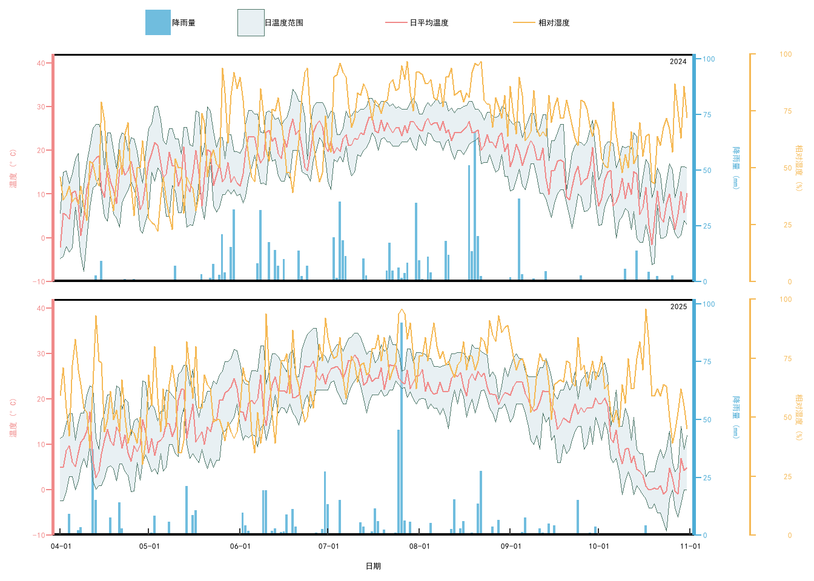
ggsave("qixiang.pdf",
plot = g_combined,
width = 5.6,
height = 2.42 * n_years,
device = cairo_pdf)RGB颜色数字对应R中的编码
rgb(239, 117, 113, maxColorValue = 255)[1] "#EF7571"包载入
保存文件夹
output_dir <- "ceshi" # 新目录
if(!dir.exists(output_dir)) dir.create(output_dir)数据导入
file_name <- "2024297.xlsx"
raw_danwei <- read_excel(
file_name,
sheet = "单位对照表"
)
raw_suoxie <-read_excel(
file_name,
sheet = "英文对照表"
)
raw_data1 <- read_excel(file_name)
raw_data2<- raw_data1 %>%
group_by(across(1:2)) %>%
summarise(across(everything(),\(x) mean(x, na.rm = TRUE)),
.groups = 'drop')
df_plot1 <- raw_data2
raw_data <- raw_data2[, -2]
first_value <<- colnames(raw_data)[1]
colnames(raw_data)[1] <- "Group"
raw_data$Group <- as.factor(raw_data$Group)
traits <- colnames(raw_data)[-1]
raw_data4 <- raw_data1[, -2]
colnames(raw_data4)[1] <- "Group"
raw_data4$Group <- as.factor(raw_data4$Group)
raw_data5<- raw_data1 %>%
group_by(across (1)) %>%
summarise(across(everything(),\(x) mean(x, na.rm = TRUE)),
.groups = 'drop')
raw_data5 <- raw_data5[, -2]基础数据统计（均值、标准差、变幅）
# file_name <- "2024297.xlsx"
#
# raw_danwei <- read_excel(
# file_name,
# sheet = "单位对照表"
# )
# raw_suoxie <-read_excel(
# file_name,
# sheet = "英文对照表"
# )
# raw_data1 <- read_excel(file_name)
raw_data6 <- raw_data1 %>%
group_by(across(1)) %>%
summarise(
across(where(is.numeric),
~paste(sprintf("%.2f", mean(., na.rm = TRUE)),
sprintf("%.2f", sd(., na.rm = TRUE)),
sep = " ± "),
.names = "{col}_均值±SD"),
across(where(is.numeric),
~paste(sprintf("%.2f", min(., na.rm = TRUE)),
sprintf("%.2f", max(., na.rm = TRUE)),
sep = " - "),
.names = "{col}_变幅"),
.groups = 'drop'
)
write.csv(raw_data6, "基础统计.csv", row.names = FALSE)
print(raw_data6)# A tibble: 3 × 15
密度 `重复_均值±SD` `产量_均值±SD` `株高_均值±SD` `分枝角度_均值±SD`
<dbl> <chr> <chr> <chr> <chr>
1 24 2.00 ± 0.87 3332.80 ± 2372.18 52.30 ± 8.96 22.67 ± 12.72
2 30 2.00 ± 0.87 5176.67 ± 2669.58 60.34 ± 13.18 18.80 ± 11.91
3 34 1.50 ± 0.55 6556.33 ± 3062.07 65.40 ± 10.10 14.17 ± 3.66
# ℹ 10 more variables: `单株粒重_均值±SD` <chr>, `百粒重_均值±SD` <chr>,
# `顶端贡献率_均值±SD` <chr>, 重复_变幅 <chr>, 产量_变幅 <chr>,
# 株高_变幅 <chr>, 分枝角度_变幅 <chr>, 单株粒重_变幅 <chr>,
# 百粒重_变幅 <chr>, 顶端贡献率_变幅 <chr>多重比较（图+表）
res_anova_spss_list <- list()
res_summary_list <- list()
# file_name <- "2024297.xlsx"
#
# if(!file.exists(file_name)) {
# stop(paste("错误：未找到文件", file_name, "请确保文件在当前工作目录下。"))
# }
# raw_danwei <- read_excel(
# file_name,
# sheet = "单位对照表"
# )
# raw_suoxie <-read_excel(
# file_name,
# sheet = "英文对照表"
# )
# raw_data1 <- read_excel(file_name)
# raw_data2<- raw_data1 %>%
# group_by(across(1:2)) %>%
# summarise(across(everything(),\(x) mean(x, na.rm = TRUE)),
# .groups = 'drop')
# raw_data <- raw_data2[, -2]
# first_value <<- colnames(raw_data)[1]
# colnames(raw_data)[1] <- "Group"
# raw_data$Group <- as.factor(raw_data$Group)
# traits <- colnames(raw_data)[-1]
for(trait in traits) {
df_sub <- raw_data[, c("Group", trait)]
colnames(df_sub) <- c("Group", "Value")
df_sub <- na.omit(df_sub)
if (!trait %in% colnames(raw_danwei))
{traitdanwei <- trait
} else {unit_val <- raw_danwei[[trait]]
if (!is.na(unit_val) && nzchar(unit_val)) {
traitdanwei <- paste0(trait, "(", unit_val, ")")}
else {traitdanwei <- trait}}
if (!first_value %in% colnames(raw_danwei))
{first_valuedanwei <- first_value
} else {unit_val <- raw_danwei[[first_value]]
if (!is.na(unit_val) && nzchar(unit_val)) {
first_valuedanwei <- paste0(first_value, "(", unit_val, ")")}
else {first_valuedanwei <- first_value}}
if (!trait %in% colnames(raw_suoxie))
{traitsuoxie <- trait
} else {unit_val <- raw_suoxie[[trait]]
if (!is.na(unit_val) && nzchar(unit_val)) {
traitsuoxie <- paste0(trait, "(", unit_val, ")")
} else {traitsuoxie <- trait}}
lm_model <- lm(Value ~ Group, data = df_sub)
spss_table <- NULL
letters_df <- NULL
model <- aov(Value ~ Group, data = df_sub)
anova_sum <- summary(model)[[1]]
spss_table <- data.frame(性状=trait, 来源=c("组间","组内","总数"),
SS=c(anova_sum$`Sum Sq`[1:2], sum(anova_sum$`Sum Sq`)),
df=c(anova_sum$`Df`[1:2], sum(anova_sum$`Df`)),
MS=c(anova_sum$`Mean Sq`[1:2], NA), F=c(anova_sum$`F value`[1], NA, NA),
Sig=c(anova_sum$`Pr(>F)`[1], NA, NA))
if(anova_sum$`Pr(>F)`[1] < 0.05) {
duncan <- duncan.test(model, "Group", console=FALSE)
letters_df <- data.frame(Group = rownames(duncan$groups), groups = duncan$groups$groups)
} else { letters_df <- data.frame(Group = unique(df_sub$Group), groups = "a") }
res_anova_spss_list[[trait]] <- spss_table
# --- C. 绘图准备 (略) ---
stats <- df_sub %>% group_by(Group) %>% summarise(Mean = mean(Value),
SE = sd(Value)/ sqrt(length(Value)), .groups='drop')
plot_data <- merge(stats, letters_df, by="Group")
plot_data$Trait <- trait
# **关键修改点：在summary中同时保存 Mean_Formatted 和 groups**
plot_data$Mean_Formatted <- sprintf("%.2f", plot_data$Mean)
res_summary_list[[trait]] <- plot_data
final_summary <- do.call(rbind, res_summary_list)
table_data_mean <- final_summary %>%
dplyr::select(Group, Trait, Mean_Formatted) %>%
pivot_wider(names_from = Trait, values_from = Mean_Formatted, names_prefix = "Mean_")
table_data_groups <- final_summary %>%
dplyr::select(Group, Trait, groups) %>%
pivot_wider(names_from = Trait, values_from = groups, names_prefix = "Letter_")
# 合并数据（按 Group 合并）
table_data_wide <- merge(table_data_mean, table_data_groups, by = "Group")
# 创建最终输出表格，将 Mean 和 Letter 交替排列
output_cols <- c("Group")
all_traits <- unique(final_summary$Trait)
for (trait in all_traits) {
output_cols <- c(output_cols, paste0("Mean_", trait), paste0("Letter_", trait))}
table_data <- table_data_wide[, output_cols]
# 空. 绘制柱状图--------
p_bar <- ggplot(plot_data, aes(x = Group, y = Mean)) +
geom_col_pattern(
aes(pattern_angle = 45), pattern = "stripe", fill = "white", colour = "black",
pattern_fill = "black", pattern_density = 0.01, pattern_spacing = 0.03, width = 0.4
) +
geom_errorbar(aes(ymin = Mean, ymax = Mean + SE), width = 0.2) +
geom_text(aes(label = groups, y = Mean + SE), vjust = -0.5, size = 12, family = font_family, color = "black", fontface = "bold") +
labs(x = first_valuedanwei, y = traitdanwei, title = NULL) +
theme_classic() +
theme(
#text = element_text(family = font_family),
axis.text = element_text(size = 28, color = "black", face = "bold"),
axis.title = element_text(size = 28, color = "black", face = "bold"),
legend.position = "none"
) +
scale_y_continuous(expand = expansion(mult = c(0, 0.2)))
plot_dir <- file.path(output_dir, "bar")
if(!dir.exists(plot_dir)) dir.create(plot_dir)
print(p_bar)
ggsave(file.path(plot_dir, paste0(traitsuoxie, ".pdf")), p_bar, width = 6,
height = 5, device = cairo_pdf)
} 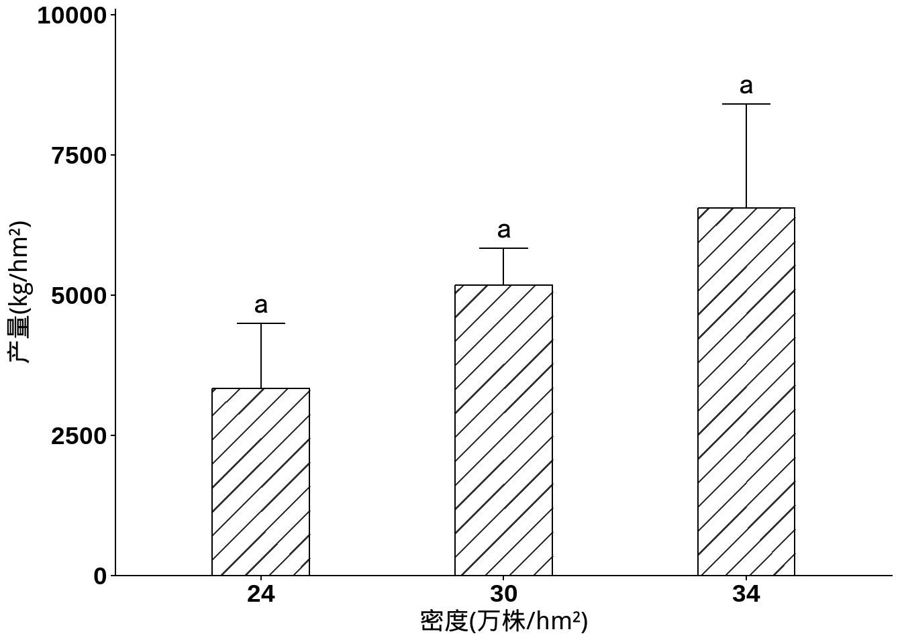
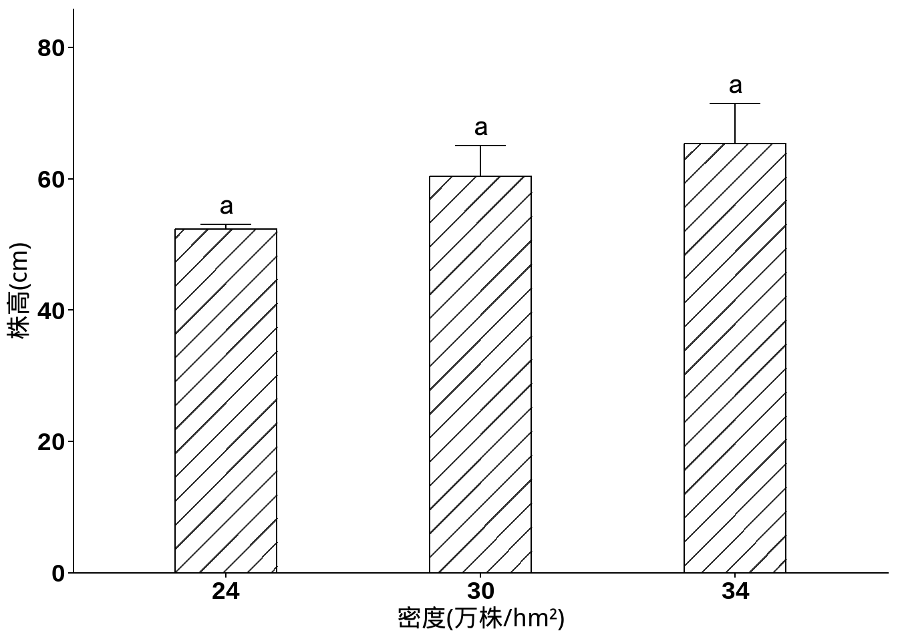
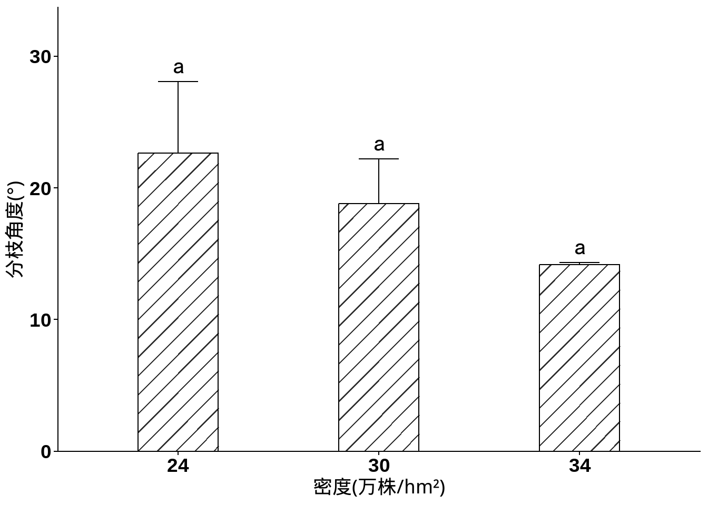
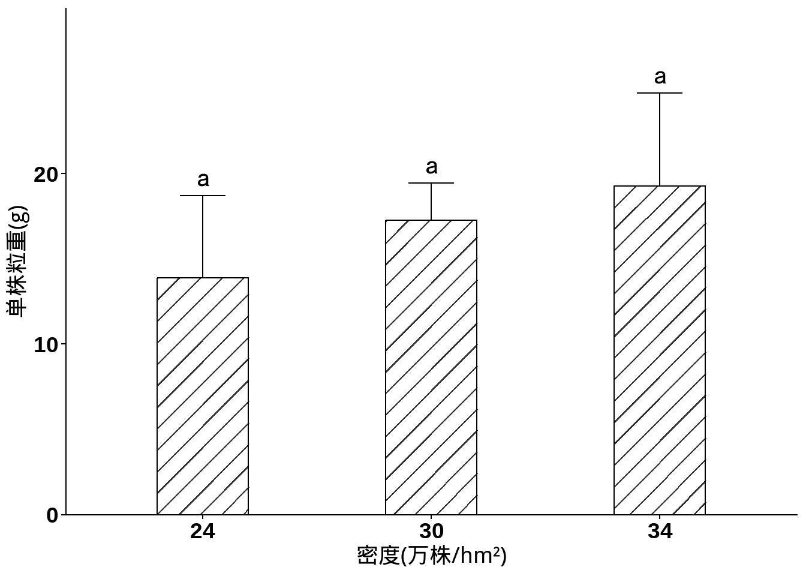
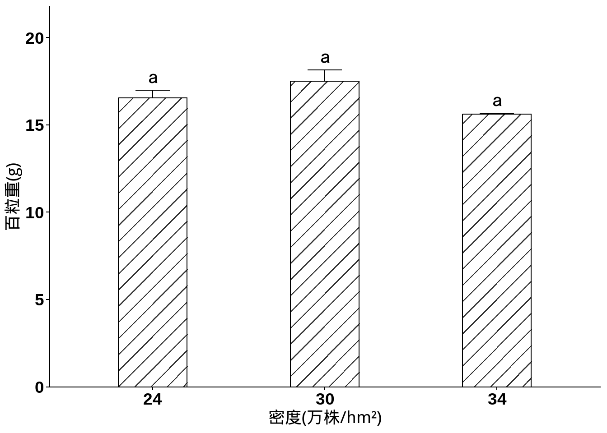
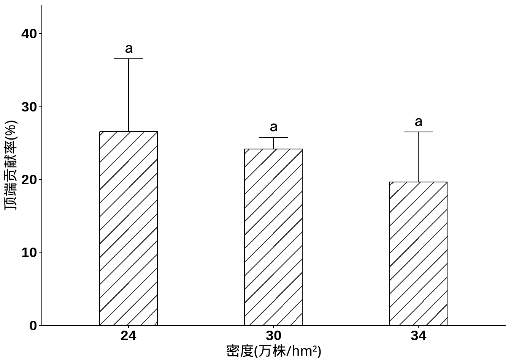
# 创建一个空的 list 来存储底部五行
bottom_stats <- list()
# 计算各个性状的统计量
for (trait in all_traits) {
trait_values <- na.omit(raw_data[[trait]])
m_val <- mean(trait_values)
se_val <- sd(trait_values)
cv_val <- (sd(trait_values) / m_val) * 100
anova_info <- res_anova_spss_list[[trait]]
f_stat <- anova_info$F[1] # F值或卡方值
p_val <- anova_info$Sig[1] # P值
f_sig <- case_when(
p_val < 0.001 ~ "***",
p_val < 0.01 ~ "**",
p_val < 0.05 ~ "*",
TRUE ~ ""
)
bottom_stats[[trait]] <- data.frame(
Trait = trait,
Mean = sprintf("%.2f", m_val),
SD = sprintf("%.2f", se_val),
CV = paste0(sprintf("%.2f", cv_val), "%"),
F_val = paste0(sprintf("%.2f", f_stat), f_sig),
P_val = sprintf("%.3f", p_val)
)
}
# --- 2. 构造追加行 ---
# 初始化五行空数据，列数与 table_data 一致
stat_rows <- data.frame(matrix(NA, nrow = 5, ncol = ncol(table_data)))
colnames(stat_rows) <- colnames(table_data)
stat_rows[[1]] <- c("平均值", "标准差", "变异系数", "F", "P")
# 将每个性状的统计量填充到对应的 Mean 列中（字母列留空）
for (i in seq_along(all_traits)) {
trait <- all_traits[i]
col_idx <- i * 2 # 指向 Mean_trait 列
stat_rows[1, col_idx] <- bottom_stats[[trait]]$Mean
stat_rows[2, col_idx] <- bottom_stats[[trait]]$SD
stat_rows[3, col_idx] <- bottom_stats[[trait]]$CV
stat_rows[4, col_idx] <- bottom_stats[[trait]]$F_val
stat_rows[5, col_idx] <- bottom_stats[[trait]]$P_val
}
# 合并到主表
table_data_final <- rbind(table_data, stat_rows)
colnames(table_data_final)[1] <- first_value
final_output_cols <- c(first_value)
for (trait in all_traits) {
if (!trait %in% colnames(raw_danwei))
{traitdanwei <- trait
} else {unit_val <- raw_danwei[[trait]]
if (!is.na(unit_val) && nzchar(unit_val)) {
traitdanwei <- paste0(trait, "(", unit_val, ")")}
else {traitdanwei <- trait}}
final_output_cols <- c(final_output_cols, traitdanwei, paste0(trait, "_字母"))
}
colnames(table_data_final) <- final_output_cols
print(table_data_final) 密度 产量(kg/hm²) 产量_字母 株高(cm) 株高_字母 分枝角度(°) 分枝角度_字母
1 24 3332.80 a 52.30 a 22.67 a
2 30 5176.67 a 60.34 a 18.80 a
3 34 6556.33 a 65.40 a 14.17 a
4 平均值 4830.13 <NA> 58.59 <NA> 19.09 <NA>
5 标准差 2088.56 <NA> 7.86 <NA> 6.91 <NA>
6 变异系数 43.24% <NA> 13.42% <NA> 36.18% <NA>
7 F 1.86 <NA> 2.60 <NA> 0.88 <NA>
8 P 0.248 <NA> 0.168 <NA> 0.470 <NA>
单株粒重(g) 单株粒重_字母 百粒重(g) 百粒重_字母 顶端贡献率(%) 顶端贡献率_字母
1 13.89 a 16.56 a 26.54 a
2 17.26 a 17.50 a 24.15 a
3 19.28 a 15.62 a 19.65 a
4 16.50 <NA> 16.68 <NA> 23.92 <NA>
5 6.16 <NA> 1.07 <NA> 10.45 <NA>
6 37.32% <NA> 6.44% <NA> 43.70% <NA>
7 0.41 <NA> 2.88 <NA> 0.20 <NA>
8 0.682 <NA> 0.147 <NA> 0.823 <NA>小提琴图
#raw_data
for(trait in traits) {
df_sub <- raw_data[, c("Group", trait)]
colnames(df_sub) <- c("Group", "Value")
df_sub <- na.omit(df_sub)
df_sub1 <- raw_data4[, c("Group", trait)]
colnames(df_sub1) <- c("Group", "Value")
df_sub1 <- na.omit(df_sub1)
if (!trait %in% colnames(raw_danwei))
{traitdanwei <- trait
} else {unit_val <- raw_danwei[[trait]]
if (!is.na(unit_val) && nzchar(unit_val)) {
traitdanwei <- paste0(trait, "(", unit_val, ")")}
else {traitdanwei <- trait}}
if (!first_value %in% colnames(raw_danwei))
{first_valuedanwei <- first_value
} else {unit_val <- raw_danwei[[first_value]]
if (!is.na(unit_val) && nzchar(unit_val)) {
first_valuedanwei <- paste0(first_value, "(", unit_val, ")")}
else {first_valuedanwei <- first_value}}
if (!trait %in% colnames(raw_suoxie))
{traitsuoxie <- trait
} else {unit_val <- raw_suoxie[[trait]]
if (!is.na(unit_val) && nzchar(unit_val)) {
traitsuoxie <- unit_val
} else {traitsuoxie <- trait}}
lm_model <- lm(Value ~ Group, data = df_sub)
spss_table <- NULL
letters_df <- NULL
model <- aov(Value ~ Group, data = df_sub)
anova_sum <- summary(model)[[1]]
spss_table <- data.frame(性状=trait, 来源=c("组间","组内","总数"),
SS=c(anova_sum$`Sum Sq`[1:2], sum(anova_sum$`Sum Sq`)),
df=c(anova_sum$`Df`[1:2], sum(anova_sum$`Df`)),
MS=c(anova_sum$`Mean Sq`[1:2], NA), F=c(anova_sum$`F value`[1], NA, NA),
Sig=c(anova_sum$`Pr(>F)`[1], NA, NA))
if(anova_sum$`Pr(>F)`[1] < 0.05) {
duncan <- duncan.test(model, "Group", console=FALSE)
letters_df <- data.frame(Group = rownames(duncan$groups), groups = duncan$groups$groups)
} else { letters_df <- data.frame(Group = unique(df_sub$Group), groups = "a") }
res_anova_spss_list[[trait]] <- spss_table
# --- C. 绘图准备 (略) ---
stats <- df_sub %>% group_by(Group) %>% summarise(Mean = mean(Value),
SE = sd(Value)/ sqrt(length(Value)), .groups='drop')
plot_data <- merge(stats, letters_df, by="Group")
plot_data$Trait <- trait
# **关键修改点：在summary中同时保存 Mean_Formatted 和 groups**
plot_data$Mean_Formatted <- sprintf("%.2f", plot_data$Mean)
res_summary_list[[trait]] <- plot_data
final_summary <- do.call(rbind, res_summary_list)
table_data_mean <- final_summary %>%
dplyr::select(Group, Trait, Mean_Formatted) %>%
pivot_wider(names_from = Trait, values_from = Mean_Formatted, names_prefix = "Mean_")
table_data_groups <- final_summary %>%
dplyr::select(Group, Trait, groups) %>%
pivot_wider(names_from = Trait, values_from = groups, names_prefix = "Letter_")
# 合并数据（按 Group 合并）
table_data_wide <- merge(table_data_mean, table_data_groups, by = "Group")
# 创建最终输出表格，将 Mean 和 Letter 交替排列
output_cols <- c("Group")
all_traits <- unique(final_summary$Trait)
for (trait in all_traits) {
output_cols <- c(output_cols, paste0("Mean_", trait), paste0("Letter_", trait))}
table_data <- table_data_wide[, output_cols]
# 空. 绘制小提琴图--------
# (1) 在后台默默生成一个小提琴图层（不需要打印出来）
dummy_p <- ggplot(df_sub1, aes(x = Group, y = Value)) +
geom_violin(trim = FALSE)
# (2) 提取该图形底层的绘图数据
shadow_data <- ggplot_build(dummy_p)$data[[1]]
# (3) 提取每个分组（group 1, 2, 3...）画出来的阴影曲线的最高 Y 坐标
max_shadow <- shadow_data %>%
dplyr::group_by(group) %>%
dplyr::summarize(Shadow_Max = max(y), .groups = 'drop')
# (4) 将您原本的 plot_data 的 Group 转成与底层数据对应的数字顺序，并合并
plot_data$group_num <- as.numeric(factor(plot_data$Group, levels = levels(df_sub1$Group)))
plot_data1 <- merge(plot_data, max_shadow, by.x = "group_num", by.y = "group")
# 计算当前数据的整体极差 (最大值 - 最小值)，取极差的 5% 作为字母向上浮动的距离
y_range <- max(df_sub1$Value, na.rm = TRUE) - min(df_sub1$Value, na.rm = TRUE)
offset <- ifelse(y_range == 0, 1, y_range * 0.1) # 防止全是一个值导致极差为0
plot_data1$y_pos <- plot_data1$Shadow_Max + offset
min_val <- min(df_sub1$Value, na.rm = TRUE)
# 2. 预设一组好看的填充颜色 (最多支持10个组，如果您的组更多，可以继续往里加颜色代码)
my_colors <- c("#BD7C78", "#B0D7E9", "#7767A1", "#F7C7C0",
"#8491B4", "#91D1C2", "#DC0000", "#7E6148")
# 3. 开始使用 df_sub(原始) 和 plot_data(汇总) 联合绘图
p_violin <- ggplot() +
# 第1层：小提琴背景，必须使用原始数据 df_sub
geom_violin(data = df_sub1, aes(x = Group, y = Value, fill = Group, color = Group),
trim = FALSE, linewidth = 0.01) +
# 第2层：内部箱线图，也使用原始数据 df_sub
geom_boxplot(data = df_sub1, aes(x = Group, y = Value),
width = 0.06, color = "black", fill = "black", outlier.shape = NA) +
# 第3层：中位数白点，使用原始数据 df_sub
stat_summary(data = df_sub1, aes(x = Group, y = Value),
fun = median, geom = "point", fill = "white", color = "white", shape = 21, size = 4) +
# 第4层：显著性字母，必须使用包含 groups 列的汇总数据 plot_data
geom_text(data = plot_data1,
aes(x = Group, y = y_pos, label = groups),
family = "Times New Roman", size = 16, fontface = "bold", color = "black") +
scale_color_manual(values = my_colors)+
scale_fill_manual(values = my_colors) +
labs(x = first_valuedanwei, y = traitdanwei, title = NULL) +
theme_bw() +
theme(
panel.grid.major = element_blank(),
panel.grid.minor = element_blank(),
axis.text.x = element_text(family = "Times New Roman", size = 30, color = "black", face = "bold"),
axis.text.y = element_text(family = "Times New Roman", size = 30, color = "black", face = "bold", hjust = 0.5),
axis.title.x = element_text(size = 30, color = "black", face = "bold", margin = margin(t = 10)),
axis.title.y = element_text(size = 30, color = "black", face = "bold", margin = margin(r = 10)),
legend.position = "none"
) +
# Y轴向上留出 15% 的空白给字母，防止字母被图片边缘切断
scale_y_continuous(limits = c(min_val, NA),expand = expansion(mult = c(0.01, 0.05)))
print(p_violin)
plot_dir <- file.path(output_dir, "violin_plots")
if(!dir.exists(plot_dir)) dir.create(plot_dir, recursive = TRUE)
ggsave(file.path(plot_dir, paste0(traitsuoxie, ".pdf")), p_violin,
width = 7, height = 6, device = cairo_pdf)
# 空. 绘制小提琴图--------
# (1) 在后台默默生成一个小提琴图层（不需要打印出来）
dummy_p <- ggplot(df_sub, aes(x = Group, y = Value)) +
geom_violin(trim = FALSE)
# (2) 提取该图形底层的绘图数据
shadow_data <- ggplot_build(dummy_p)$data[[1]]
# (3) 提取每个分组（group 1, 2, 3...）画出来的阴影曲线的最高 Y 坐标
max_shadow <- shadow_data %>%
dplyr::group_by(group) %>%
dplyr::summarize(Shadow_Max = max(y), .groups = 'drop')
# (4) 将您原本的 plot_data 的 Group 转成与底层数据对应的数字顺序，并合并
plot_data$group_num <- as.numeric(factor(plot_data$Group, levels = levels(df_sub$Group)))
plot_data1 <- merge(plot_data, max_shadow, by.x = "group_num", by.y = "group")
# 计算当前数据的整体极差 (最大值 - 最小值)，取极差的 5% 作为字母向上浮动的距离
y_range <- max(df_sub$Value, na.rm = TRUE) - min(df_sub$Value, na.rm = TRUE)
offset <- ifelse(y_range == 0, 1, y_range * 0.1) # 防止全是一个值导致极差为0
plot_data1$y_pos <- plot_data1$Shadow_Max + offset
min_val <- min(df_sub$Value, na.rm = TRUE)
# 2. 预设一组好看的填充颜色 (最多支持10个组，如果您的组更多，可以继续往里加颜色代码)
my_colors <- c("#BD7C78", "#B0D7E9", "#7767A1", "#F7C7C0",
"#8491B4", "#91D1C2", "#DC0000", "#7E6148")
# 3. 开始使用 df_sub(原始) 和 plot_data(汇总) 联合绘图
p_violin <- ggplot() +
# 第1层：小提琴背景，必须使用原始数据 df_sub
geom_violin(data = df_sub, aes(x = Group, y = Value, fill = Group, color = Group),
trim = FALSE, linewidth = 0.01) +
# 第2层：内部箱线图，也使用原始数据 df_sub
geom_boxplot(data = df_sub, aes(x = Group, y = Value),
width = 0.06, color = "black", fill = "black", outlier.shape = NA) +
# 第3层：中位数白点，使用原始数据 df_sub
stat_summary(data = df_sub, aes(x = Group, y = Value),
fun = median, geom = "point", fill = "white", color = "white", shape = 21, size = 4) +
# 第4层：显著性字母，必须使用包含 groups 列的汇总数据 plot_data
geom_text(data = plot_data1,
aes(x = Group, y = y_pos, label = groups),
family = "Times New Roman", size = 16, fontface = "bold", color = "black") +
scale_color_manual(values = my_colors)+
scale_fill_manual(values = my_colors) +
labs(x = first_valuedanwei, y = traitdanwei, title = NULL) +
theme_bw() +
theme(
panel.grid.major = element_blank(),
panel.grid.minor = element_blank(),
axis.text.x = element_text(family = "Times New Roman", size = 30, color = "black", face = "bold"),
axis.text.y = element_text(family = "Times New Roman", size = 30, color = "black", face = "bold", hjust = 0.5),
axis.title.x = element_text(size = 30, color = "black", face = "bold", margin = margin(t = 10)),
axis.title.y = element_text(size = 30, color = "black", face = "bold", margin = margin(r = 10)),
legend.position = "none"
) +
# Y轴向上留出 15% 的空白给字母，防止字母被图片边缘切断
scale_y_continuous(limits = c(min_val, NA),expand = expansion(mult = c(0.01, 0.05)))
print(p_violin)
plot_dir1 <- file.path(output_dir, "violin_plots_pinjun")
if(!dir.exists(plot_dir1)) dir.create(plot_dir1, recursive = TRUE)
ggsave(file.path(plot_dir1, paste0(traitsuoxie, ".pdf")), p_violin,
width = 7, height = 6, device = cairo_pdf)
} 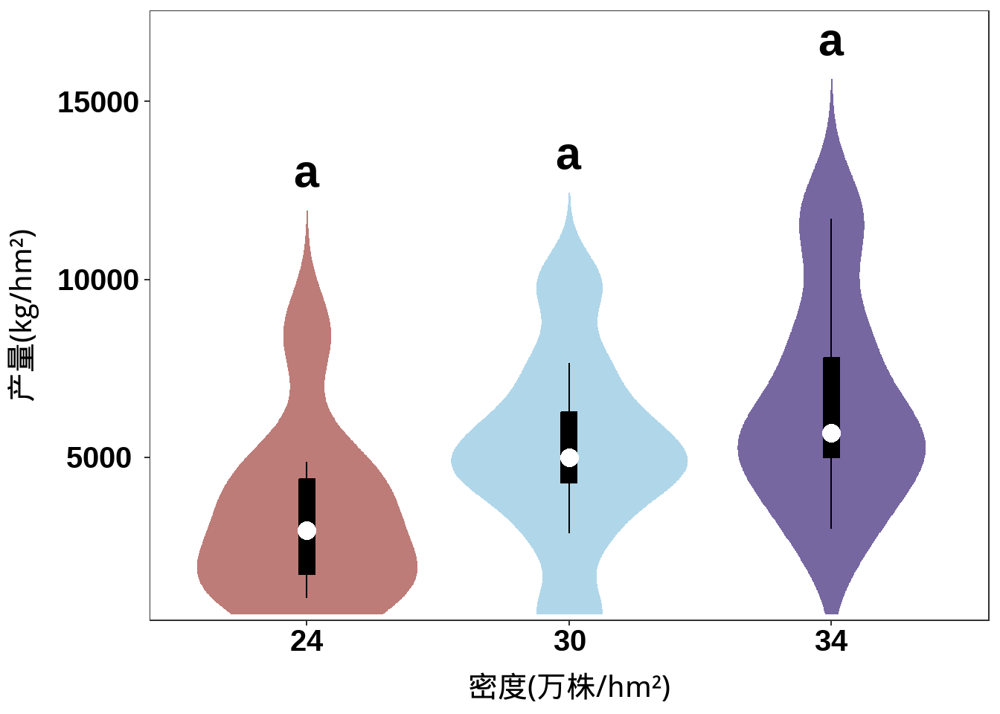
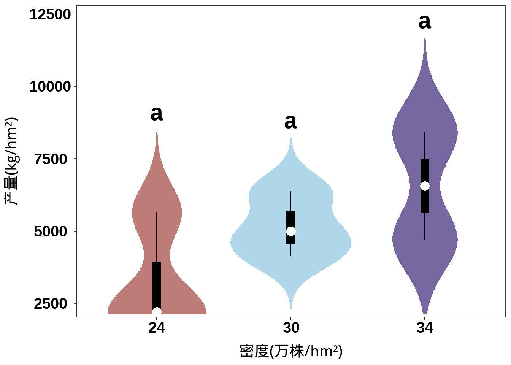
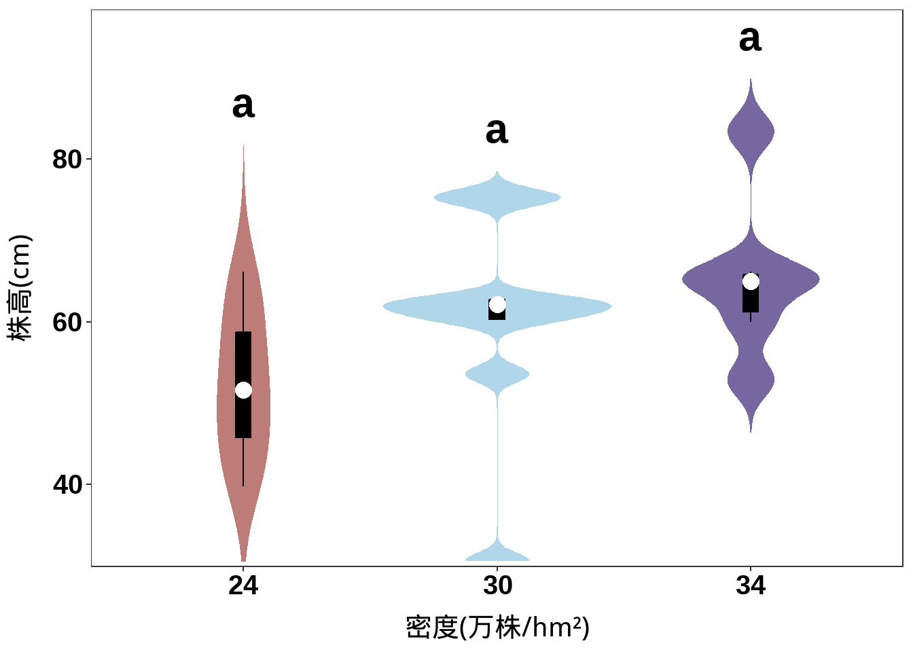
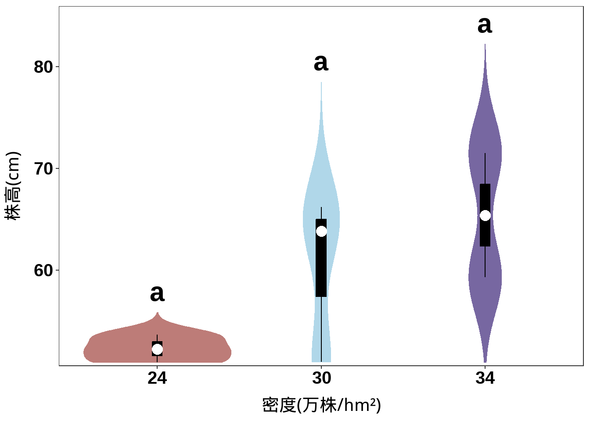
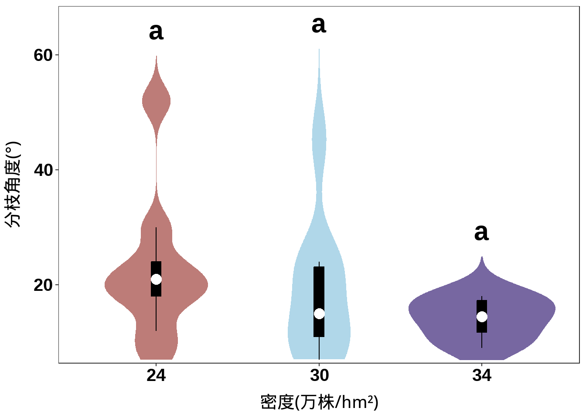
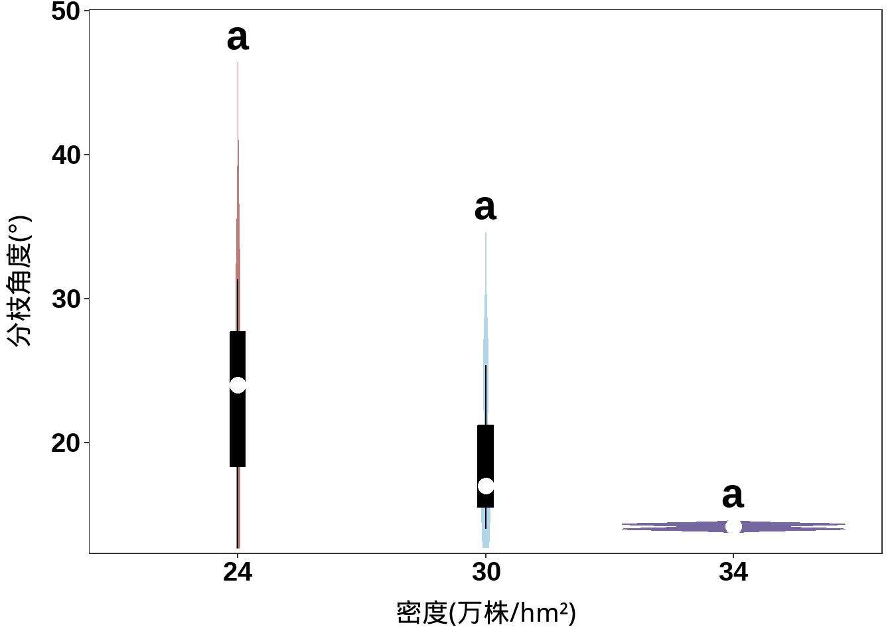
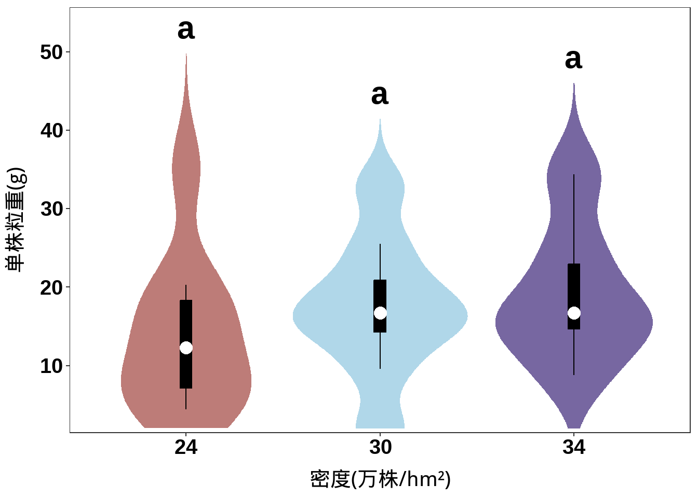
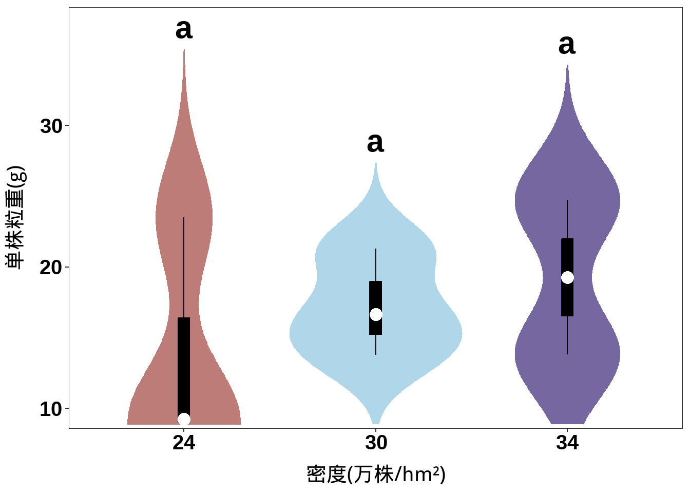
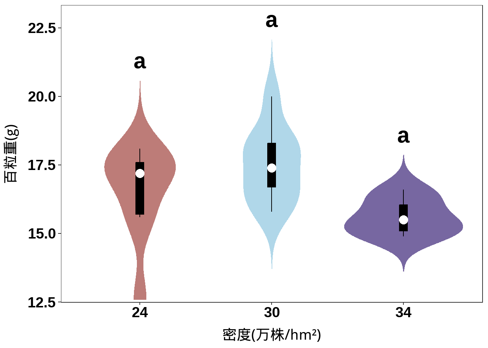
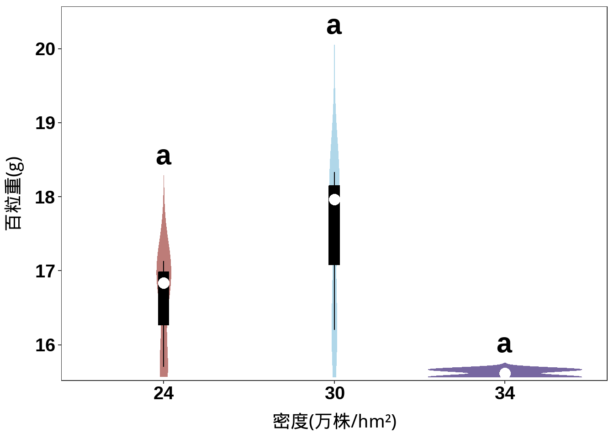
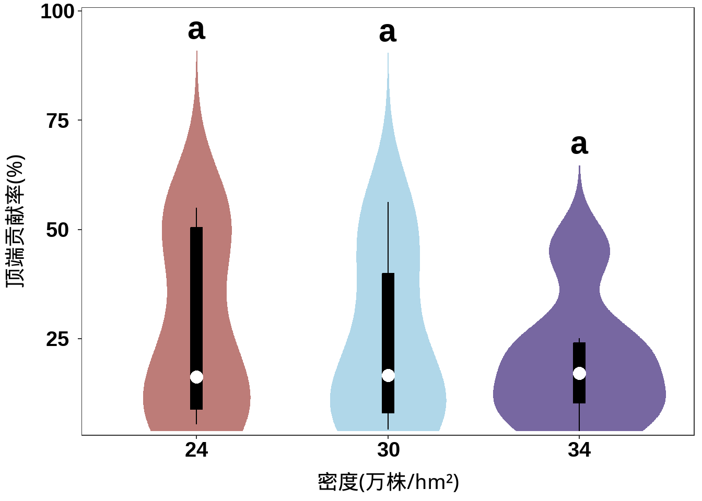
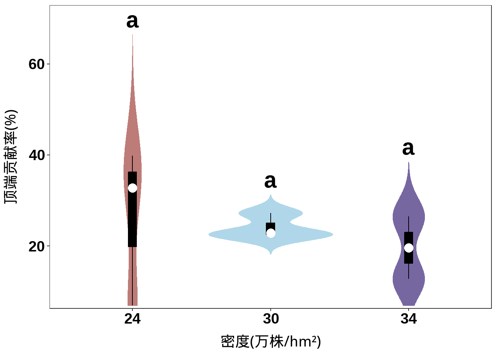
频次分布直方图——观测值
# raw_data4
for(trait in traits) {
frequent_dir <- file.path(output_dir, "frequency")
if(!dir.exists(frequent_dir)) dir.create(frequent_dir)
if (!trait %in% colnames(raw_danwei))
{traitdanwei <- trait
} else {unit_val <- raw_danwei[[trait]]
if (!is.na(unit_val) && nzchar(unit_val)) {
traitdanwei <- paste0(trait, "(", unit_val, ")")}
else {traitdanwei <- trait}}
if (!first_value %in% colnames(raw_danwei))
{first_valuedanwei <- first_value
} else {unit_val <- raw_danwei[[first_value]]
if (!is.na(unit_val) && nzchar(unit_val)) {
first_valuedanwei <- paste0(first_value, "(", unit_val, ")")}
else {first_valuedanwei <- first_value}}
if (!trait %in% colnames(raw_suoxie))
{traitsuoxie <- trait
} else {unit_val <- raw_suoxie[[trait]]
if (!is.na(unit_val) && nzchar(unit_val)) {
traitsuoxie <- paste0(trait, "(", unit_val, ")")
} else {traitsuoxie <- trait}}
df_sub1 <- raw_data4[, c("Group", trait)]
colnames(df_sub1) <- c("Group", "Value")
df_sub1 <- na.omit(df_sub1)
mean_val <- mean(df_sub1$Value)
sd_val <- sd(df_sub1$Value)
n_obs <- nrow(df_sub1)
n_bins <- nclass.Sturges(df_sub1$Value)
min_val <- min(df_sub1$Value)
max_val <- max(df_sub1$Value)
# 计算箱宽
bin_width <- (max_val - min_val) / n_bins
# 生成分箱的边界序列 (即每个箱子的最小值和最大值位置)
# 使用 seq 生成从最小值到最大值的等差数列
breaks_seq <- seq(from = min_val, to = max_val, length.out = n_bins + 1)
# (可选) 确保覆盖最大值，防止浮点数精度问题导致最右侧数据丢失
if(max(breaks_seq) < max_val) {
breaks_seq[length(breaks_seq)] <- max_val
}
# --- 2. 绘图 ---
p_hist <- ggplot(df_sub1, aes(x = Value)) +
# A. 绘制带斜线的直方图
# --- 修改部分 2: 使用 breaks 参数 ---
geom_histogram_pattern(
aes(y = after_stat(count)),
breaks = breaks_seq, # <--- 关键修改：使用显式定义的边界，而不是 binwidth
# 颜色设置
fill = "white",
color = "black",
# 纹理设置
pattern = "stripe",
pattern_angle = -45,
pattern_density = 0.1,
pattern_spacing = 0.02,
pattern_fill = "black",
pattern_colour = "black",
linewidth = 0.6
) +
# B. 绘制正态分布拟合曲线
stat_function(
fun = function(x) dnorm(x, mean = mean_val, sd = sd_val) * n_obs * bin_width,
color = "black",
linewidth = 1.5
) +
# --- 修改部分 3: 设置 X 轴刻度与分箱边界对齐 ---
scale_y_continuous(expand = expansion(mult = c(0, 0.05))) +
scale_x_continuous(
breaks = breaks_seq, # 刻度位置
labels = sprintf("%.1f", breaks_seq) # 强制保留1位小数 (如 10.0)
) +
# D. 标签设置
labs(x = traitdanwei, y = "频次") +
# E. 主题设置
theme_classic() +
theme(
##text = element_text(family = font_family),
# --- 修改部分 4: 调整 X 轴文字角度防止重叠 ---
# 因为显示了所有边界，数字会变密，通常需要旋转 45 度
axis.text.x = element_text(size = 12, color = "black", angle = 45, hjust = 1, margin = margin(t = 5)),
axis.text.y = element_text(size = 18, color = "black", margin = margin(r = 5)),
# 坐标轴标题
axis.title.y = element_text(size = 20, color = "black", margin = margin(r = 10)),
axis.title.x = element_text(size = 20, color = "black", margin = margin(t = 10)),
# 去除图例
legend.position = "none",
# 坐标轴线加粗
axis.line = element_line(linewidth = 0.8)
)
print(p_hist)
# 保存图片
ggsave(file.path(frequent_dir, paste0(traitsuoxie , "_guance.png")),
p_hist, width = 3, height = 2)
}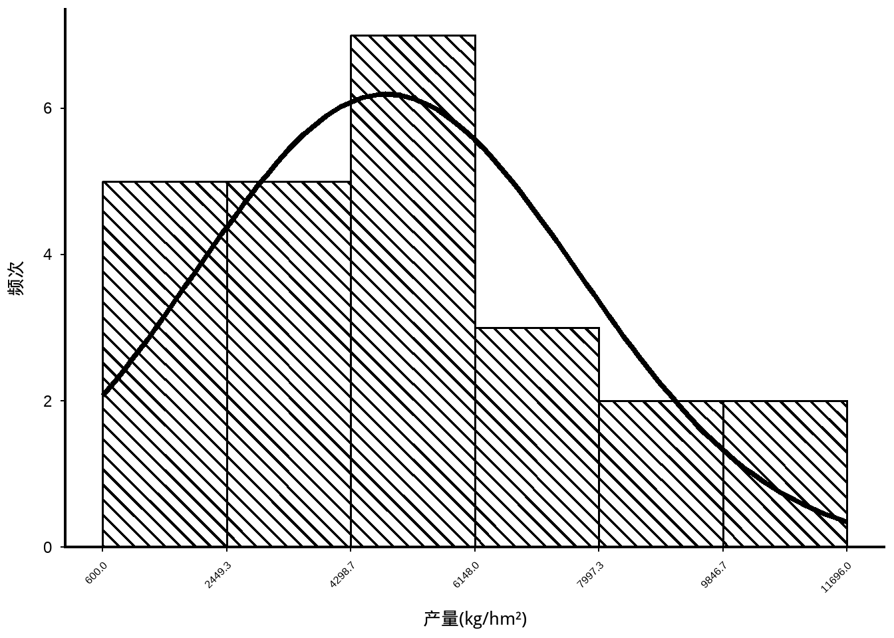
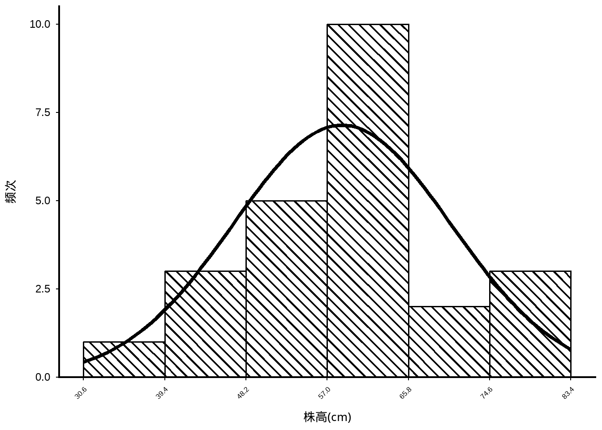
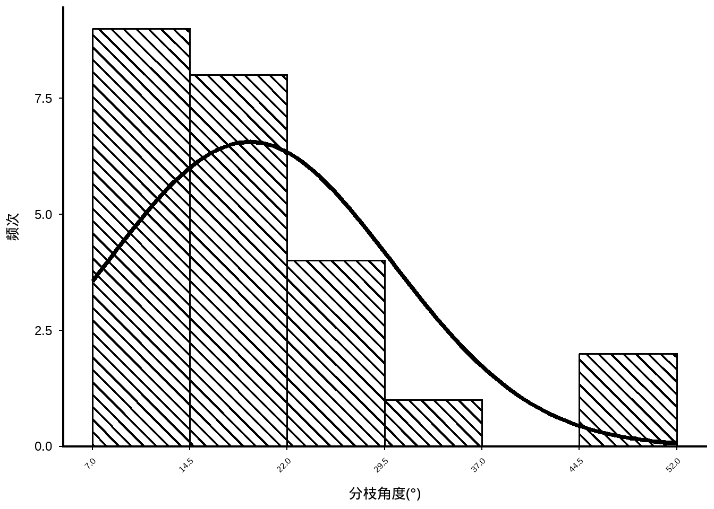
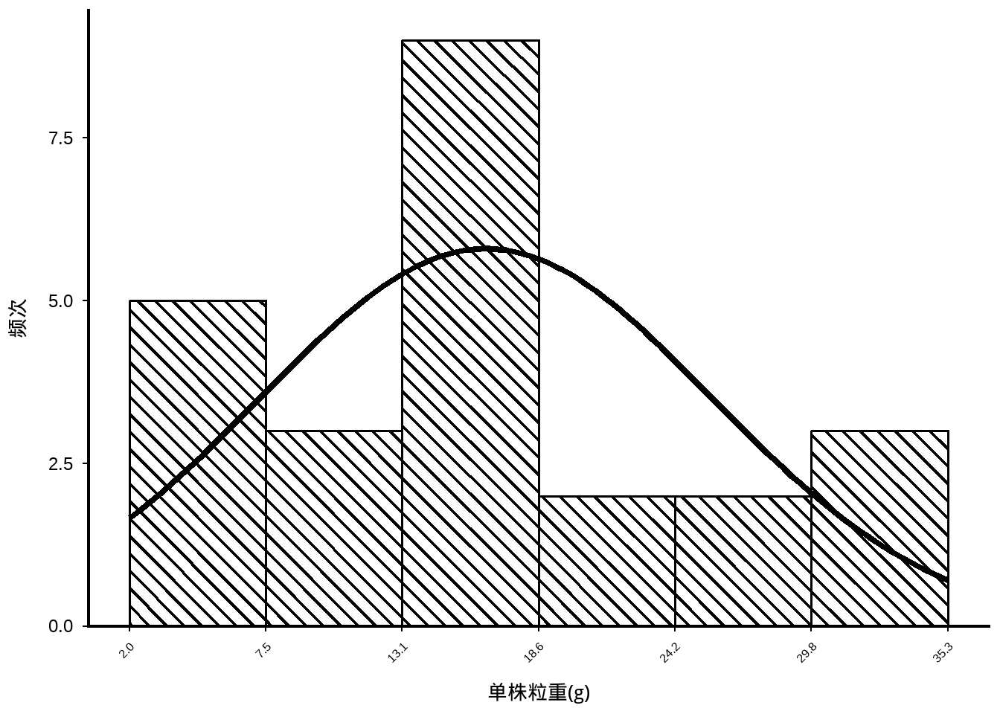
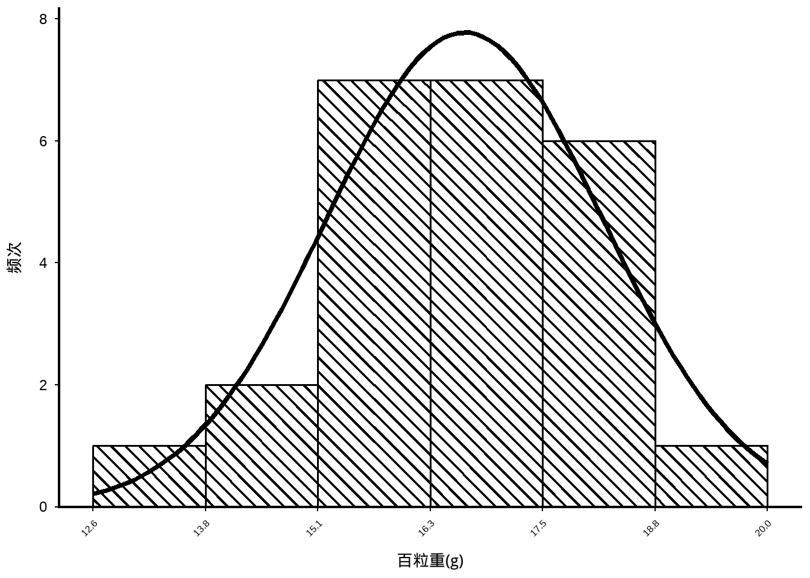
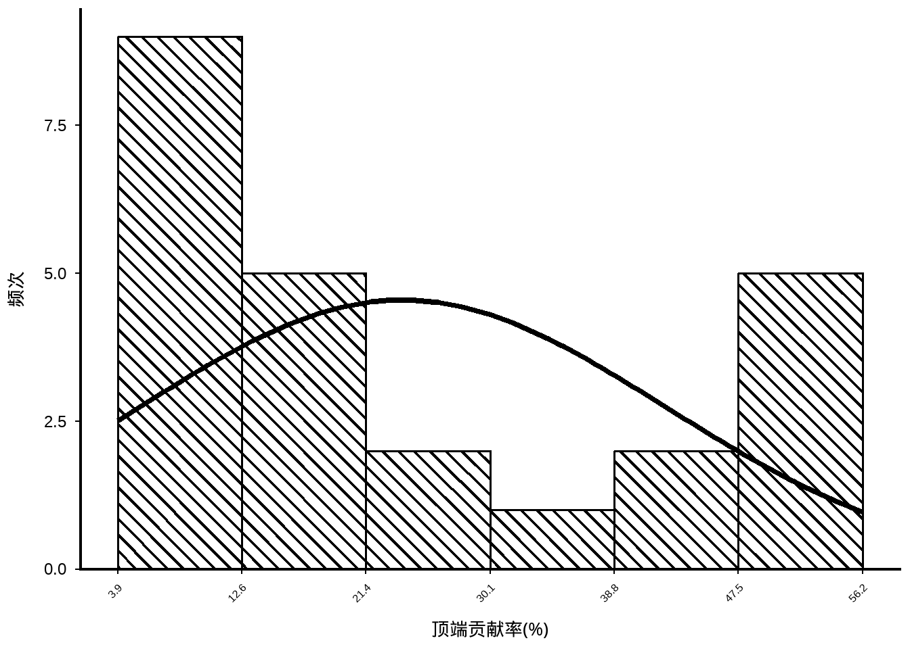
频次分布直方图——平均值
# raw_data
for(trait in traits) {
frequent_dir1 <- file.path(output_dir, "frequency_pinjun")
if(!dir.exists(frequent_dir1)) dir.create(frequent_dir1)
if (!trait %in% colnames(raw_danwei))
{traitdanwei <- trait
} else {unit_val <- raw_danwei[[trait]]
if (!is.na(unit_val) && nzchar(unit_val)) {
traitdanwei <- paste0(trait, "(", unit_val, ")")}
else {traitdanwei <- trait}}
if (!first_value %in% colnames(raw_danwei))
{first_valuedanwei <- first_value
} else {unit_val <- raw_danwei[[first_value]]
if (!is.na(unit_val) && nzchar(unit_val)) {
first_valuedanwei <- paste0(first_value, "(", unit_val, ")")}
else {first_valuedanwei <- first_value}}
if (!trait %in% colnames(raw_suoxie))
{traitsuoxie <- trait
} else {unit_val <- raw_suoxie[[trait]]
if (!is.na(unit_val) && nzchar(unit_val)) {
traitsuoxie <- paste0(trait, "(", unit_val, ")")
} else {traitsuoxie <- trait}}
df_sub <- raw_data[, c("Group", trait)]
colnames(df_sub) <- c("Group", "Value")
df_sub <- na.omit(df_sub)
mean_val <- mean(df_sub$Value)
sd_val <- sd(df_sub$Value)
n_obs <- nrow(df_sub)
# --- 修改部分 1: 显式计算分箱的边界 (Breaks) ---
n_bins <- nclass.Sturges(df_sub$Value)
min_val <- min(df_sub$Value)
max_val <- max(df_sub$Value)
# 计算箱宽
bin_width <- (max_val - min_val) / n_bins
# 生成分箱的边界序列 (即每个箱子的最小值和最大值位置)
# 使用 seq 生成从最小值到最大值的等差数列
breaks_seq <- seq(from = min_val, to = max_val, length.out = n_bins + 1)
# (可选) 确保覆盖最大值，防止浮点数精度问题导致最右侧数据丢失
if(max(breaks_seq) < max_val) {
breaks_seq[length(breaks_seq)] <- max_val
}
# --- 2. 绘图 ---
p_hist <- ggplot(df_sub, aes(x = Value)) +
# A. 绘制带斜线的直方图
# --- 修改部分 2: 使用 breaks 参数 ---
geom_histogram_pattern(
aes(y = after_stat(count)),
breaks = breaks_seq, # <--- 关键修改：使用显式定义的边界，而不是 binwidth
# 颜色设置
fill = "white",
color = "black",
# 纹理设置
pattern = "stripe",
pattern_angle = -45,
pattern_density = 0.1,
pattern_spacing = 0.02,
pattern_fill = "black",
pattern_colour = "black",
linewidth = 0.6
) +
# B. 绘制正态分布拟合曲线
stat_function(
fun = function(x) dnorm(x, mean = mean_val, sd = sd_val) * n_obs * bin_width,
color = "black",
linewidth = 1.5
) +
# --- 修改部分 3: 设置 X 轴刻度与分箱边界对齐 ---
scale_y_continuous(expand = expansion(mult = c(0, 0.05))) +
scale_x_continuous(
breaks = breaks_seq, # 刻度位置
labels = sprintf("%.1f", breaks_seq) # 强制保留1位小数 (如 10.0)
) +
labs(
x = traitdanwei,
y = "频次") +
# E. 主题设置
theme_classic() +
theme(
##text = element_text(family = font_family),
# --- 修改部分 4: 调整 X 轴文字角度防止重叠 ---
# 因为显示了所有边界，数字会变密，通常需要旋转 45 度
axis.text.x = element_text(size = 12, color = "black", angle = 45, hjust = 1, margin = margin(t = 5)),
axis.text.y = element_text(size = 18, color = "black", margin = margin(r = 5)),
# 坐标轴标题
axis.title.y = element_text(size = 20, color = "black", margin = margin(r = 10)),
axis.title.x = element_text(size = 20, color = "black", margin = margin(t = 10)),
# 去除图例
legend.position = "none",
# 坐标轴线加粗
axis.line = element_line(linewidth = 0.8)
)
print(p_hist)
# 保存图片
ggsave(file.path(frequent_dir1, paste0(traitsuoxie, "_pingjun.pdf")),
p_hist, width = 6, height = 4.5)
}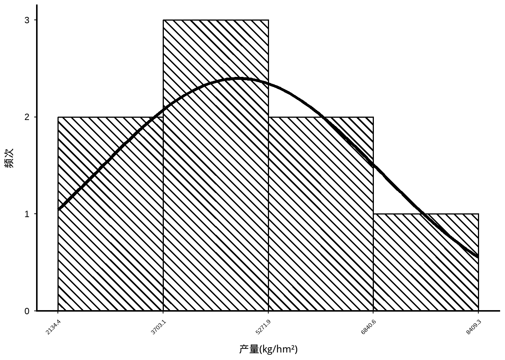
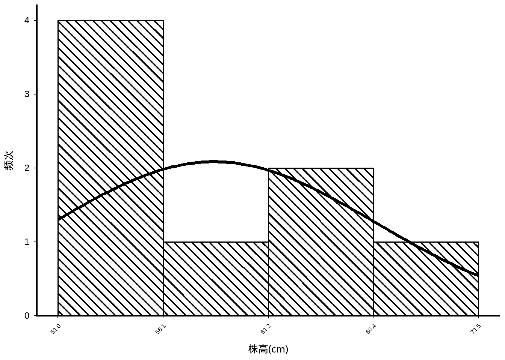
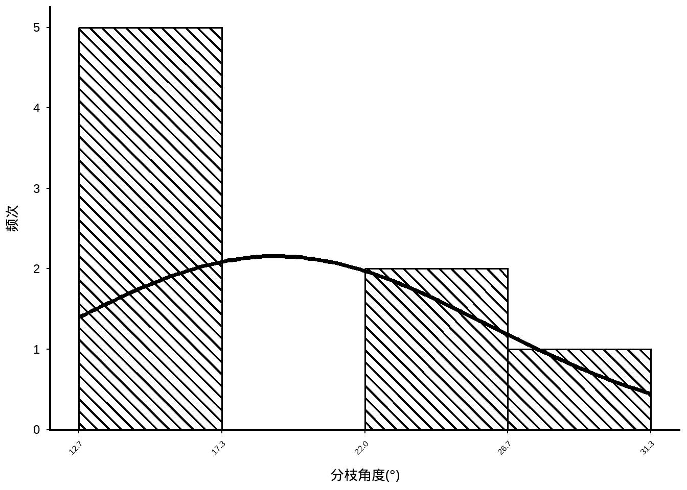
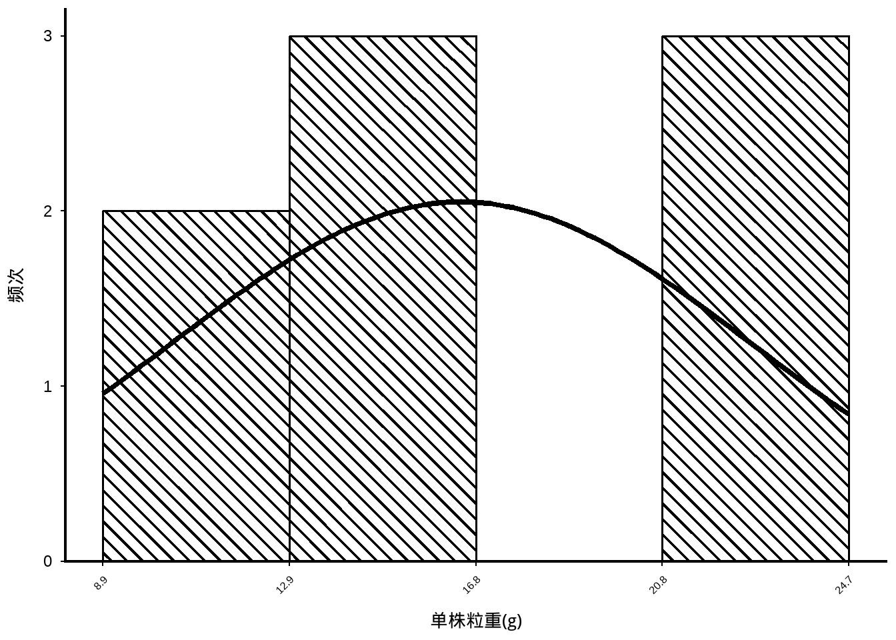
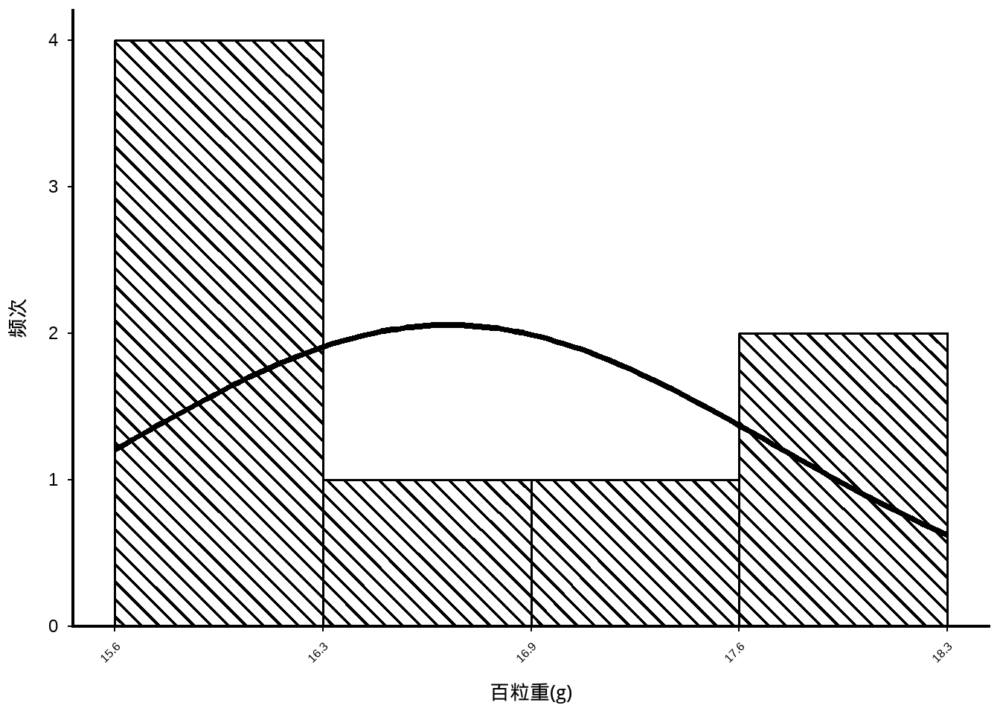
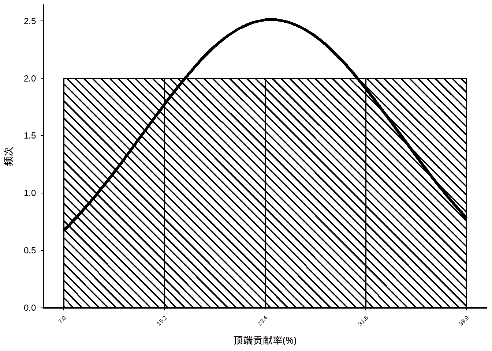
箱线图——观测值
# raw_data4
my_base_colors <- c("#6A76A8", "#DF7A76", "#82B0D2", "#FFBE7A", "#FA7F6F")
my_colors <- rep(my_base_colors, length.out = 8000)
for(trait in traits) {
df_sub1 <- raw_data4[, c("Group", trait)]
colnames(df_sub1) <- c("Group", "Value")
df_sub1 <- na.omit(df_sub1)
if (!trait %in% colnames(raw_danwei))
{traitdanwei <- trait
} else {unit_val <- raw_danwei[[trait]]
if (!is.na(unit_val) && nzchar(unit_val)) {
traitdanwei <- paste0(trait, "(", unit_val, ")")}
else {traitdanwei <- trait}}
if (!first_value %in% colnames(raw_danwei))
{first_valuedanwei <- first_value
} else {unit_val <- raw_danwei[[first_value]]
if (!is.na(unit_val) && nzchar(unit_val)) {
first_valuedanwei <- paste0(first_value, "(", unit_val, ")")}
else {first_valuedanwei <- first_value}}
if (!trait %in% colnames(raw_suoxie))
{traitsuoxie <- trait
} else {unit_val <- raw_suoxie[[trait]]
if (!is.na(unit_val) && nzchar(unit_val)) {
traitsuoxie <- paste0(trait, "(", unit_val, ")")
} else {traitsuoxie <- trait}}
# 1. 获取最大值，用于确定上限
max_val <- max(df_sub1$Value, na.rm = TRUE)
min_val <- min(df_sub1$Value, na.rm = TRUE)
# 2. 设定Y轴起始点：
# 如果是生物学性状通常从 0 开始。如果不希望从0开始，可以将下面的 0 改为 min_val * 0.9 等
y_start <- min_val * 0.99
# 3. 设定Y轴上限：比最大值多 10% 空间，防止离群点被切掉或顶到图边缘
y_end <- max_val * 1.01
# 4. 生成漂亮的刻度断点 (pretty函数会自动生成也就是包含最小值和最大值范围的合适刻度)
my_breaks <- pretty(c(y_start, y_end))
# 确保最大刻度能包住数据最大值，如果pretty生成的最大值不够，就手动扩展
if(max(my_breaks) < max_val) {
my_breaks <- c(my_breaks, max(my_breaks) + diff(my_breaks)[1])
}
p_box <- ggplot(df_sub1, aes(x = Group, y = Value, fill = Group, group = Group))+
# 1. 绘制误差条
stat_boxplot(geom = "errorbar", width = 0.2, linewidth = 0.6) +
# 2. 绘制箱线图
geom_boxplot(
width = 0.55,
outlier.shape = 1,
outlier.size = 2,
outlier.stroke = 0.8,
linewidth = 0.6,
color = "black"
) +
# 3. 颜色设置
scale_fill_manual(values = my_colors) +
# --- 新增核心修改：Y轴设置 ---
scale_y_continuous(
breaks = my_breaks, # 使用我们要的刻度
limits = c(min(my_breaks), max(my_breaks)), # 强制限制范围
expand = expansion(mult = c(0, 0.05)) # 关键：mult=c(0, ...) 让底部不留空隙，紧贴X轴
) +
# 4. 标签设置
labs(
x = first_valuedanwei,
y = traitdanwei
) +
# 5. 主题设置
theme_classic() +
theme(
#text = element_text(family = "sans"),
axis.text.x = element_text(size = 18, color = "black", margin = margin(t = 5)),
axis.text.y = element_text(size = 18, color = "black", margin = margin(r = 5)),
axis.title.y = element_text(size = 20, color = "black", margin = margin(r = 10)),
axis.title.x = element_text(size = 20, color = "black", margin = margin(t = 10)),
legend.position = "none",
axis.line = element_line(linewidth = 0.8)
)
print(p_box)
# 保存箱线图
box_dir <- file.path(output_dir, "xiangxiantu")
if(!dir.exists(box_dir)) dir.create(box_dir)
ggsave(file.path(box_dir, paste0(traitsuoxie, "_guance.png")),
p_box, width = 4, height = 5)
}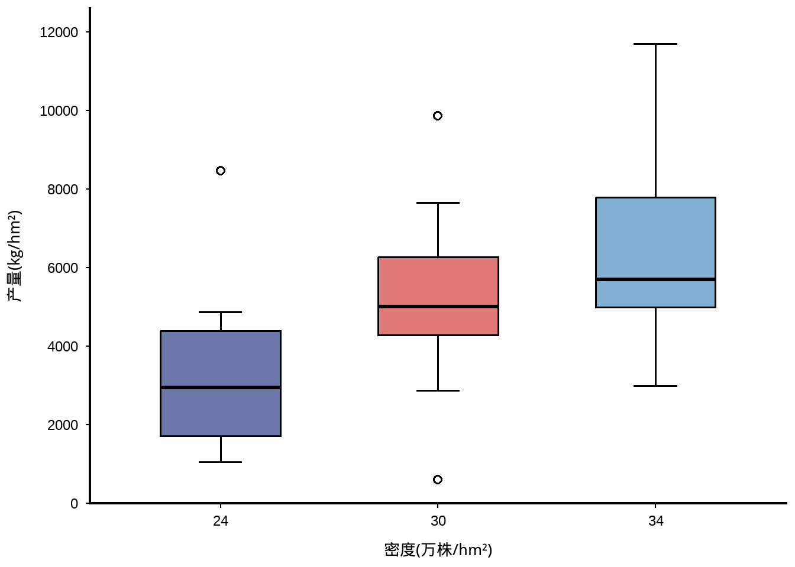
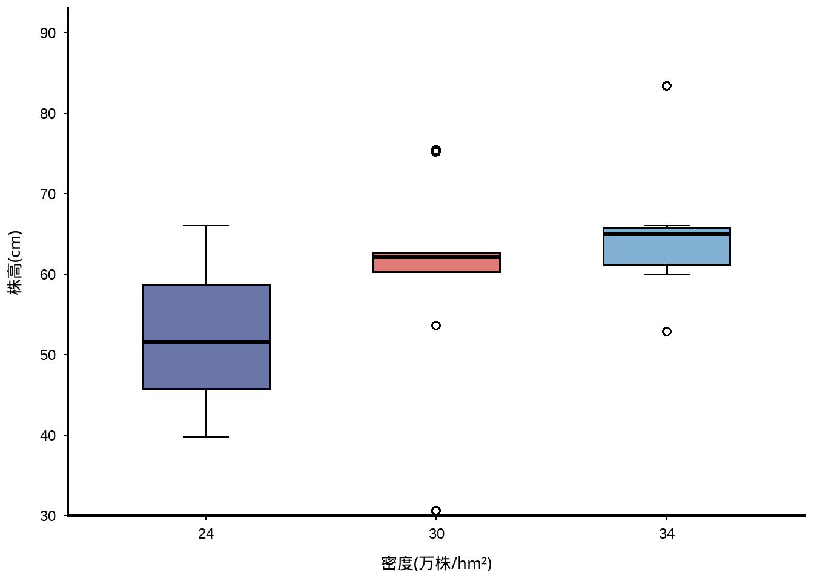
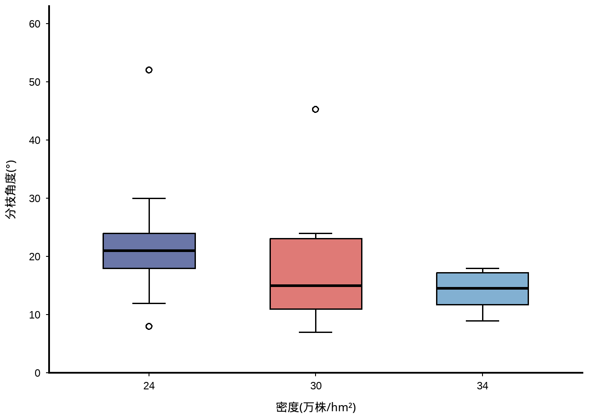
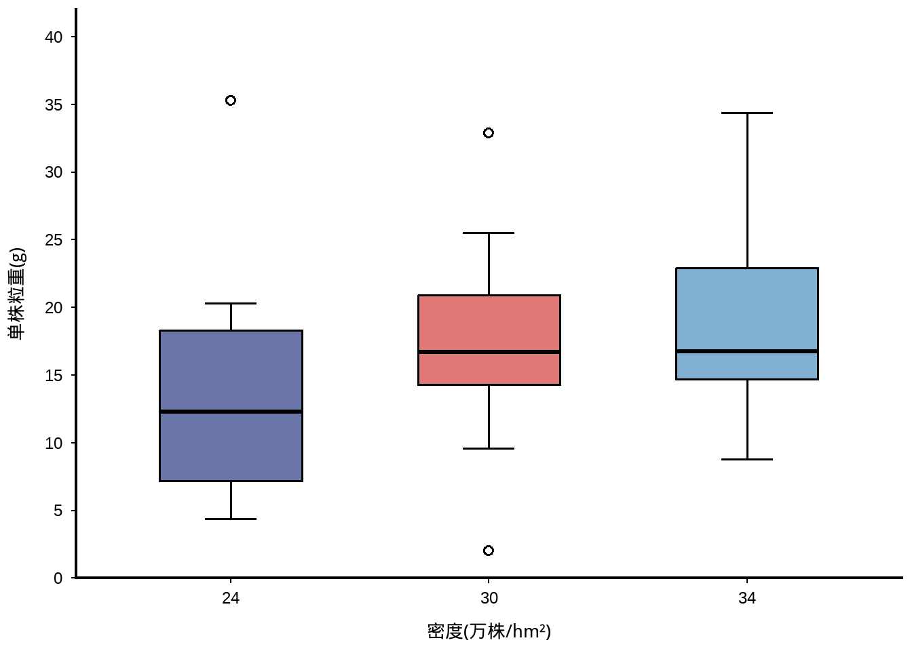
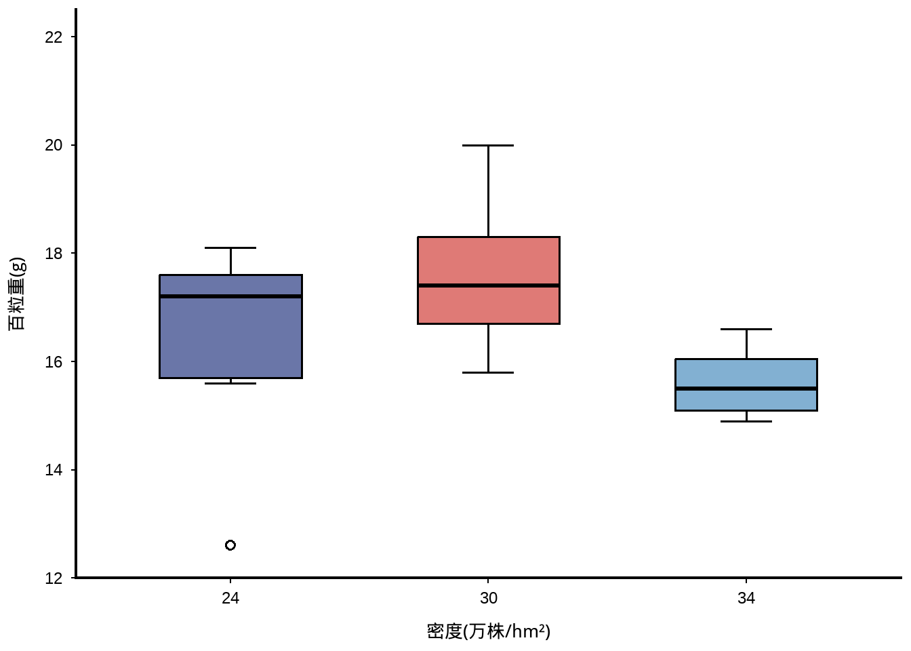
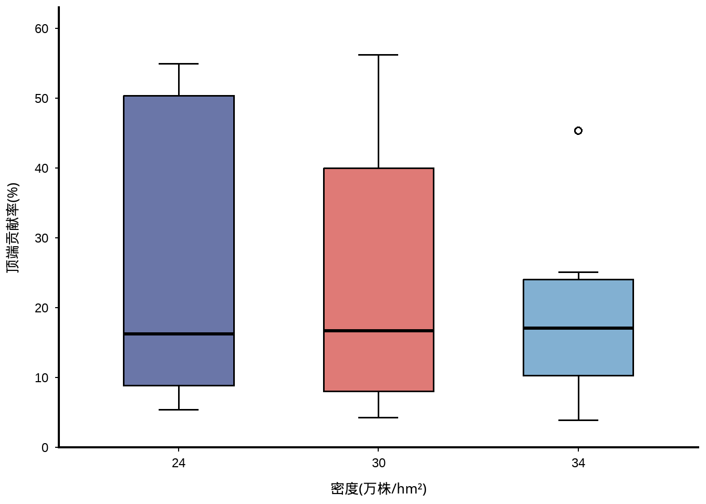
箱线图——平均值
# raw_data
my_base_colors <- c("#6A76A8", "#DF7A76", "#82B0D2", "#FFBE7A", "#FA7F6F")
my_colors <- rep(my_base_colors, length.out = 8000)
for(trait in traits) {
df_sub <- raw_data[, c("Group", trait)]
colnames(df_sub) <- c("Group", "Value")
df_sub <- na.omit(df_sub)
if (!trait %in% colnames(raw_danwei))
{traitdanwei <- trait
} else {unit_val <- raw_danwei[[trait]]
if (!is.na(unit_val) && nzchar(unit_val)) {
traitdanwei <- paste0(trait, "(", unit_val, ")")}
else {traitdanwei <- trait}}
if (!first_value %in% colnames(raw_danwei))
{first_valuedanwei <- first_value
} else {unit_val <- raw_danwei[[first_value]]
if (!is.na(unit_val) && nzchar(unit_val)) {
first_valuedanwei <- paste0(first_value, "(", unit_val, ")")}
else {first_valuedanwei <- first_value}}
if (!trait %in% colnames(raw_suoxie))
{traitsuoxie <- trait
} else {unit_val <- raw_suoxie[[trait]]
if (!is.na(unit_val) && nzchar(unit_val)) {
traitsuoxie <- paste0(trait, "(", unit_val, ")")
} else {traitsuoxie <- trait}}
# 1. 获取最大值，用于确定上限
max_val <- max(df_sub$Value, na.rm = TRUE)
min_val <- min(df_sub$Value, na.rm = TRUE)
# 2. 设定Y轴起始点：
# 如果是生物学性状通常从 0 开始。如果不希望从0开始，可以将下面的 0 改为 min_val * 0.9 等
y_start <- min_val * 0.99
# 3. 设定Y轴上限：比最大值多 10% 空间，防止离群点被切掉或顶到图边缘
y_end <- max_val * 1.01
# 4. 生成漂亮的刻度断点 (pretty函数会自动生成也就是包含最小值和最大值范围的合适刻度)
my_breaks <- pretty(c(y_start, y_end))
# 确保最大刻度能包住数据最大值，如果pretty生成的最大值不够，就手动扩展
if(max(my_breaks) < max_val) {
my_breaks <- c(my_breaks, max(my_breaks) + diff(my_breaks)[1])
}
p_box <- ggplot(df_sub, aes(x = Group, y = Value, fill = Group, group = Group))+
# 1. 绘制误差条
stat_boxplot(geom = "errorbar", width = 0.2, linewidth = 0.6) +
# 2. 绘制箱线图
geom_boxplot(
width = 0.55,
outlier.shape = 1,
outlier.size = 2,
outlier.stroke = 0.8,
linewidth = 0.6,
color = "black"
) +
# 3. 颜色设置
scale_fill_manual(values = my_colors) +
# --- 新增核心修改：Y轴设置 ---
scale_y_continuous(
breaks = my_breaks, # 使用我们要的刻度
limits = c(min(my_breaks), max(my_breaks)), # 强制限制范围
expand = expansion(mult = c(0, 0.05)) # 关键：mult=c(0, ...) 让底部不留空隙，紧贴X轴
) +
# 4. 标签设置
labs(
x = first_valuedanwei,
y = traitdanwei
) +
# 5. 主题设置
theme_classic() +
theme(
#text = element_text(family = font_family),
axis.text.x = element_text(size = 18, color = "black", margin = margin(t = 5)),
axis.text.y = element_text(size = 18, color = "black", margin = margin(r = 5)),
axis.title.y = element_text(size = 20, color = "black", margin = margin(r = 10)),
axis.title.x = element_text(size = 20, color = "black", margin = margin(t = 10)),
legend.position = "none",
axis.line = element_line(linewidth = 0.8)
)
print(p_box)
# 保存箱线图
box_dir1 <- file.path(output_dir, "xiangxiantu_pinjun")
if(!dir.exists(box_dir1)) dir.create(box_dir1)
ggsave(file.path(box_dir1, paste0(traitsuoxie, "_pingjun.pdf")),
p_box, width = 4, height = 5, device = cairo_pdf)
}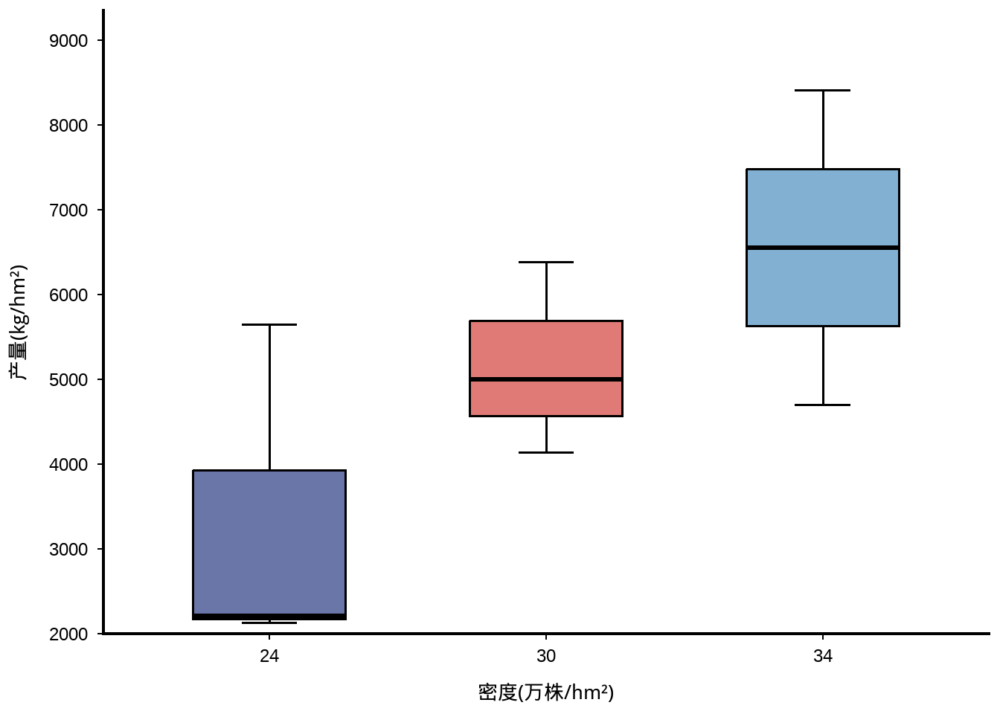
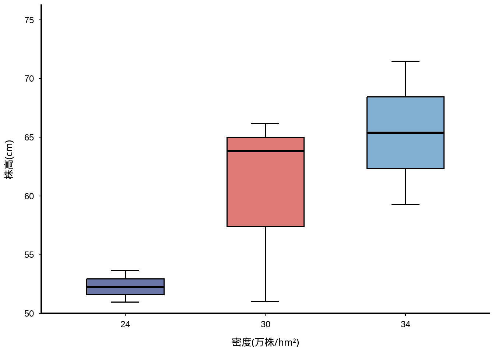
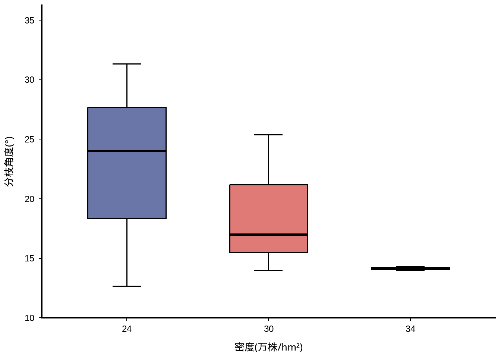
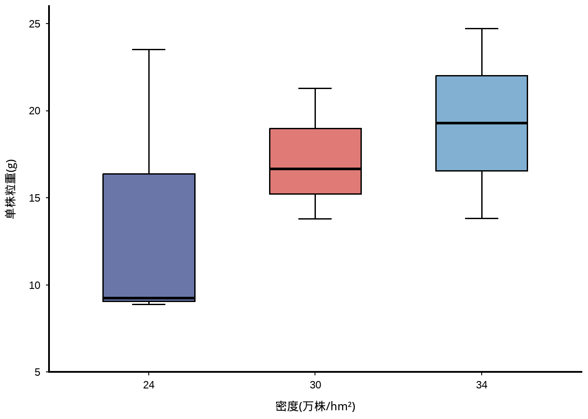
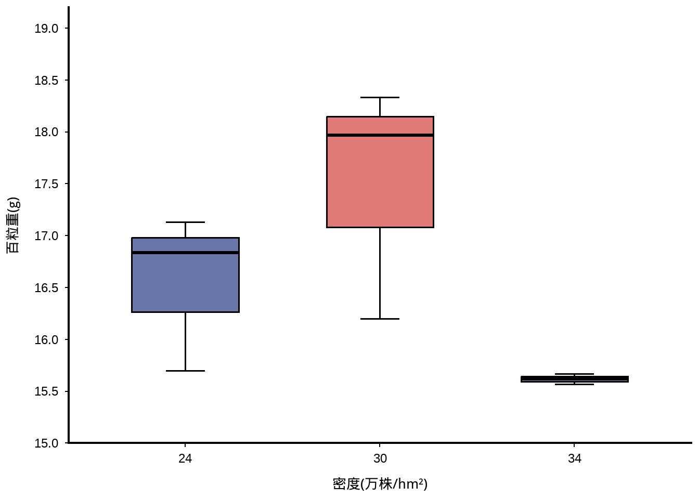
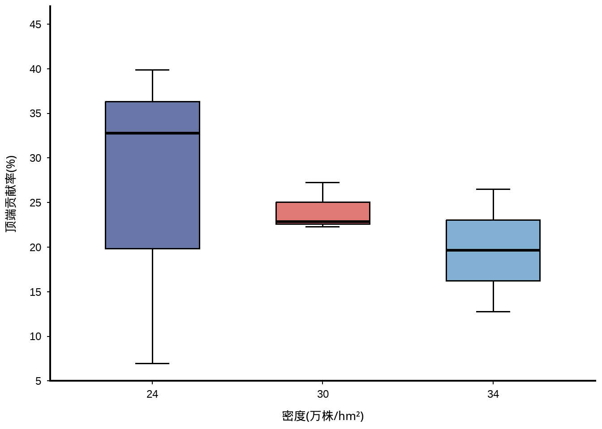
QQ图
# raw_data
for(trait in traits) {
df_sub <- raw_data[, c("Group", trait)]
colnames(df_sub) <- c("Group", "Value")
df_sub <- na.omit(df_sub)
if (!trait %in% colnames(raw_danwei))
{traitdanwei <- trait
} else {unit_val <- raw_danwei[[trait]]
if (!is.na(unit_val) && nzchar(unit_val)) {
traitdanwei <- paste0(trait, "(", unit_val, ")")}
else {traitdanwei <- trait}}
if (!first_value %in% colnames(raw_danwei))
{first_valuedanwei <- first_value
} else {unit_val <- raw_danwei[[first_value]]
if (!is.na(unit_val) && nzchar(unit_val)) {
first_valuedanwei <- paste0(first_value, "(", unit_val, ")")}
else {first_valuedanwei <- first_value}}
if (!trait %in% colnames(raw_suoxie))
{traitsuoxie <- trait
} else {unit_val <- raw_suoxie[[trait]]
if (!is.na(unit_val) && nzchar(unit_val)) {
traitsuoxie <- paste0(trait, "(", unit_val, ")")
} else {traitsuoxie <- trait}}
fit <- aov(Value ~ Group, data = df_sub)
p_qq <- ggqqplot(residuals(fit)) +
labs(x = "理论分位数", y = "残差", title = trait) +
theme(
#text = element_text(family = font_family, size = 20),
text = element_text(size = 20),
axis.title.x = element_text(size = 20, margin = margin(t = 8)),
axis.title.y = element_text(size = 20, margin = margin(r = 8)),
plot.title = element_text(hjust = 0.5, # 标题居中
color = "black", # 标题颜色
size = 20),
plot.margin = margin(t = 10, r = 10, b = 5, l = 10, unit = "pt")
)
print(p_qq)
qq_dir <- file.path(output_dir, "QQ")
if(!dir.exists(qq_dir)) dir.create(qq_dir)
ggsave(file.path(qq_dir, paste0(traitsuoxie, "_residuals_qq.pdf")), p_qq, width = 5, height = 4, device = cairo_pdf)
}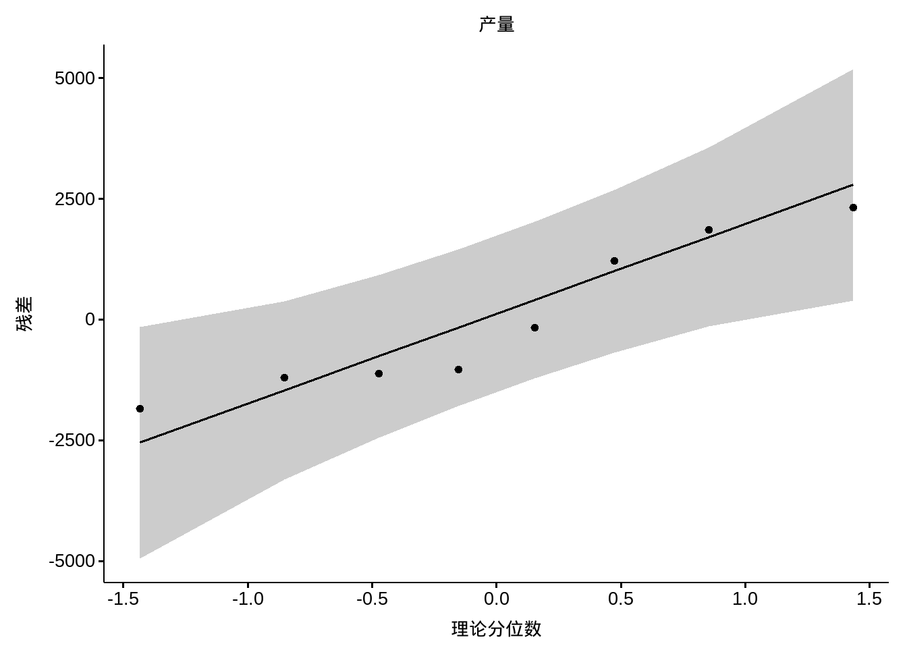
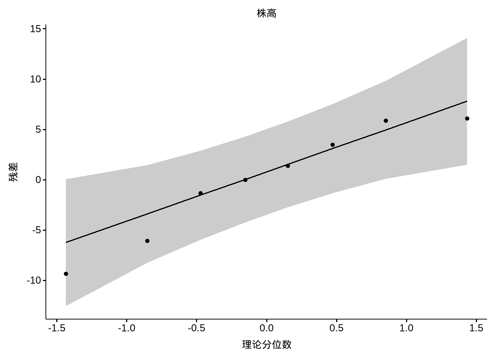
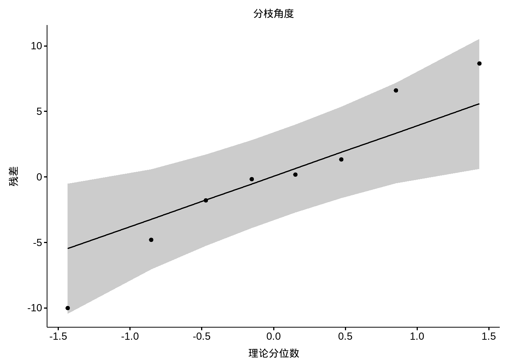
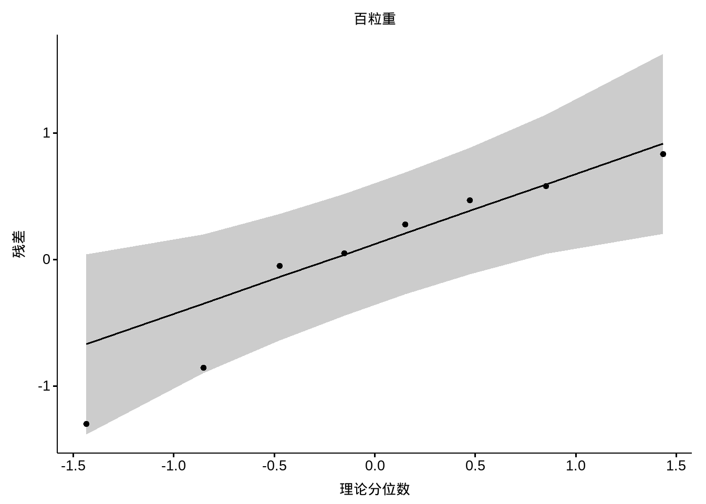
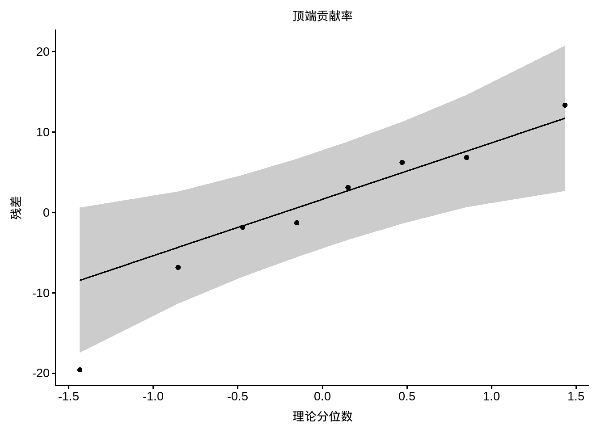
相关性分析——表
# raw_data4
cor_data <- raw_data4[, -c(1:2)]
cor_res <- rcorr(as.matrix(cor_data), type = "pearson")
r_mat <- cor_res$r
p_mat <- cor_res$P
formatted_cor <- matrix("", nrow = nrow(r_mat), ncol = ncol(r_mat))
for(i in 1:nrow(r_mat)) {
for(j in 1:ncol(r_mat)) {
if(i > j) {
sig <- case_when(
is.na(p_mat[i,j]) ~ "",
p_mat[i,j] < 0.001 ~ "***",
p_mat[i,j] < 0.01 ~ "**",
p_mat[i,j] < 0.05 ~ "*",
TRUE ~ "")
formatted_cor[i,j] <- paste0(sprintf("%.2f", r_mat[i,j]), sig)
}
}
}
rownames(formatted_cor) <- rownames(r_mat)
colnames(formatted_cor) <- colnames(r_mat)
formatted_cor_df <- cbind(性状 = rownames(formatted_cor), as.data.frame(formatted_cor))
formatted_cor_df <- formatted_cor_df[-1, -ncol(formatted_cor_df)]
print(formatted_cor_df) 性状 株高 分枝角度 单株粒重 百粒重
分枝角度 分枝角度 0.07
单株粒重 单株粒重 0.31 0.28
百粒重 百粒重 -0.22 0.12 0.03
顶端贡献率 顶端贡献率 0.10 0.07 -0.65*** -0.07相关性分析——图1
# raw_data1
cor_data <- raw_data1[, -c(1:3)]
common_cols <- intersect(colnames(cor_data), colnames(raw_suoxie))
colnames(cor_data)[colnames(cor_data) %in% common_cols] <-
paste0(raw_suoxie[1, common_cols])
cor_res <- rcorr(as.matrix(cor_data), type = "pearson")
r_mat <- cor_res$r
p_mat <- cor_res$P
# 转换为长格式
cordata_long <- melt(r_mat)
colnames(cordata_long) <- c("Row", "Col", "value") # 明确命名为行和列
pdata_long <- melt(p_mat)
pdata_long$value[is.na(pdata_long$value)] <- 1
colnames(pdata_long) <- c("Row", "Col", "p_val")
# 获取变量名的原始顺序
vars <- colnames(r_mat)
plot_data <- cordata_long %>%
left_join(pdata_long, by = c("Row", "Col")) %>%
mutate(
# 将行列转换为因子，保持原始顺序
Row = factor(Row, levels = vars),
Col = factor(Col, levels = vars),
# 获取数值索引用于判断区域
Row_Idx = as.numeric(Row),
Col_Idx = as.numeric(Col),
# 核心逻辑：定义区域
# 矩阵坐标中：行索引 > 列索引 = 下三角 (因为行是Y轴，列是X轴)
# 注意：在ggplot中，Y轴通常是从下往上，但我们会反转Y轴使其从上往下
Region = case_when(
Row_Idx == Col_Idx ~ "Diag", # 对角线
Row_Idx > Col_Idx ~ "Lower", # 下三角 (行号大，在矩阵下方)
Row_Idx < Col_Idx ~ "Upper" # 上三角 (行号小，在矩阵上方)
),
# 显著性标记
Stars = case_when(
p_val < 0.001 ~ "***",
p_val < 0.01 ~ "**",
p_val < 0.05 ~ "*",
TRUE ~ ""
),
# 数值标签格式化
Label_Text = sprintf("%.2f", value)
)
# 这是一个不依赖 ggforce 包的纯几何实现
n_vars <- length(vars)
get_ellipse_poly <- function(data) {
do.call(rbind, lapply(1:nrow(data), function(i) {
row <- data$Row_Idx[i] # Y轴中心 (将被反转)
col <- data$Col_Idx[i] # X轴中心
r <- data$value[i]
# 椭圆参数
theta <- seq(0, 2 * pi, length.out = 50)
radius <- 0.45 # 单元格内半径
# 根据相关性强度压扁椭圆 (r越大越扁)
minor_axis <- radius * (1 - abs(r))
major_axis <- radius
# 基础形状
x_base <- major_axis * cos(theta)
y_base <- minor_axis * sin(theta)
# 旋转角度：正相关45度，负相关-45度
angle <- ifelse(r > 0, pi/4, -pi/4)
# 旋转矩阵应用
x_rot <- x_base * cos(angle) - y_base * sin(angle)
y_rot <- x_base * sin(angle) + y_base * cos(angle)
y_center <- n_vars - row + 1
data.frame(
group_id = paste(row, col, sep = "-"),
x = col + x_rot, # X 轴正常 (Col 1 在左边)
y = y_center + y_rot, # Y 轴反转 (Row 1 在顶端)
value = r,
Row = data$Row[i],
Col = data$Col[i]
)
}))
}
data_lower <- plot_data %>% filter(Region == "Lower")
data_upper <- plot_data %>% filter(Region == "Upper")
data_diag <- plot_data %>% filter(Region == "Diag")
# 生成上三角的椭圆数据
ellipse_data <- get_ellipse_poly(data_upper)
# B. 绘图参数设置 --------------------------------------------------------------
base_size <- 18
# 定义颜色：墨绿色 - 白色 - 紫红色
color_low <- "#276419" # 类似图片中的深绿色
color_mid <- "white"
color_high <- "#8E0152" # 类似图片中的深紫红色
# C. 绘制图形 ------------------------------------------------------------------
p_corr <- ggplot(plot_data, aes(x = Col, y = Row)) + # X轴放列，Y轴放行
# 1. 基础网格 (灰色边框，无填充)
geom_tile(fill = NA, color = "grey85", linewidth = 0.5) +
# 2. 上三角：椭圆 (使用 geom_polygon)
# 填充色映射相关性，无边框
geom_polygon(data = ellipse_data,
aes(x = x, y = y, group = group_id, fill = value),
color = NA) +
# 上三角：星号 (黑色，位于椭圆中心)
geom_text(data = data_upper, aes(x = Col, y = Row, label = Stars),
color = "black", size = 6, vjust = 0.75) +
# 3. 下三角：数值 (颜色映射相关性)
geom_text(data = data_lower, aes(x = Col, y = Row, label = Label_Text, color = value,, alpha = abs(value)),
size = 4.5,fontface = "bold") +
# 4. 对角线：变量名
geom_text(data = data_diag, aes(x = Col, y = Row, label = Row),
size = 4.5,color = "black") +
# 5. 颜色标尺设置 (统一用于填充和文字颜色)
scale_fill_gradient2(
low = color_low, mid = color_mid, high = color_high,
midpoint = 0, limit = c(-1, 1), space = "Lab", name = NULL
) +
scale_color_gradient2(
low = color_low, mid = "grey30", high = color_high, # 中间值稍微加深一点灰色以保证文字可读
midpoint = 0, limit = c(-1, 1), space = "Lab", name = NULL
) +
scale_alpha(range = c(0, 1), guide = "none") +
# 6. 坐标系调整
scale_y_discrete(limits = rev(vars)) + # 反转Y轴
scale_x_discrete(position = "bottom") +
coord_fixed() +
# 7. 主题与细节
theme_minimal() +
theme(
#text = element_text(family = font_family, size = base_size),
text = element_text(size = base_size),
# 坐标轴文本
axis.text.x = element_text(angle =30,hjust = 1, vjust = 1, color = "black"),
axis.text.y = element_text(color = "black"),
axis.title = element_blank(), # 隐藏轴标题
# 去除默认网格 (使用 geom_tile 代替)
panel.grid = element_blank(),
panel.background = element_rect(fill = "white", color = NA),
# 图例位置
legend.position = "right",
legend.margin = margin(l = 5, r = 5),
legend.box.margin = margin(0, 0, 0, 0),
legend.ticks = element_blank() ### 关键：全局去掉图例刻度
) +
# 8. 图例样式 (细长条)
guides(
fill = guide_colorbar(
title = NULL,
draw.ulim = FALSE,
draw.llim = FALSE,
ticks = FALSE,
# 高度占绘图区的 90%
barheight = unit(0.9, "npc"),
barwidth = unit(0.03, "npc")
),
color = "none", # 隐藏文字颜色的独立图例
alpha = "none" # 隐藏透明度图例
)
print(p_corr)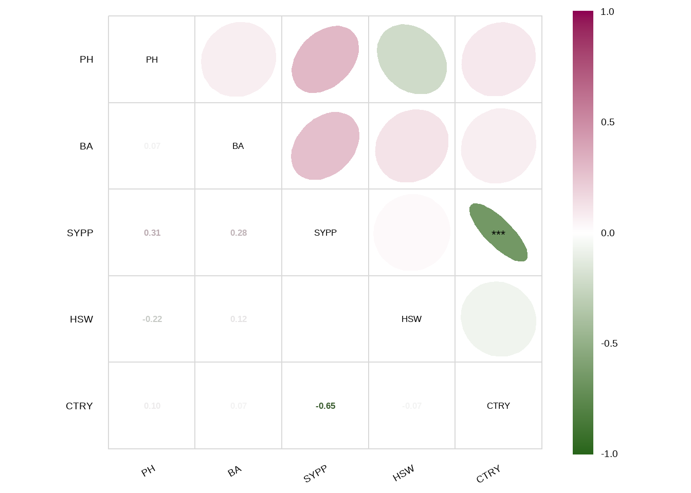
# D. 保存图片
cor_dir <- file.path(output_dir, "correlation")
if(!dir.exists(cor_dir)) dir.create(cor_dir)
ggsave(file.path(cor_dir, "Correlation_Analysis_Ellipse.pdf"),
p_corr,width = 10, height = 9,
device = cairo_pdf) 相关性分析——图2
# raw_data4
cor_data <- raw_data4[, -c(1:2)]
cor_res <- rcorr(as.matrix(cor_data), type = "pearson")
r_mat <- cor_res$r
p_mat <- cor_res$P
# 转换为长格式
cordata_long <- melt(r_mat)
colnames(cordata_long) <- c("Row", "Col", "value") # 明确命名为行和列
pdata_long <- melt(p_mat)
pdata_long$value[is.na(pdata_long$value)] <- 1
colnames(pdata_long) <- c("Row", "Col", "p_val")
# 获取变量名的原始顺序
vars <- colnames(r_mat)
# 合并数据并处理坐标逻辑
plot_data <- cordata_long %>%
left_join(pdata_long, by = c("Row", "Col")) %>%
mutate(
# 将行列转换为因子，保持原始顺序
Row = factor(Row, levels = vars),
Col = factor(Col, levels = vars),
# 获取数值索引用于判断区域
Row_Idx = as.numeric(Row),
Col_Idx = as.numeric(Col),
# 核心逻辑：定义区域
# 矩阵坐标中：行索引 > 列索引 = 下三角 (因为行是Y轴，列是X轴)
# 注意：在ggplot中，Y轴通常是从下往上，但我们会反转Y轴使其从上往下
Region = case_when(
Row_Idx == Col_Idx ~ "Diag", # 对角线
Row_Idx > Col_Idx ~ "Lower", # 下三角 (行号大，在矩阵下方)
Row_Idx < Col_Idx ~ "Upper" # 上三角 (行号小，在矩阵上方)
),
# 显著性标记
Stars = case_when(
p_val < 0.001 ~ "***",
p_val < 0.01 ~ "**",
p_val < 0.05 ~ "*",
TRUE ~ ""
),
# 数值标签格式化
Label_Text = sprintf("%.2f", value)
)
# 分拆数据以分别绘制图层
data_lower <- plot_data %>% filter(Region == "Lower")
data_upper <- plot_data %>% filter(Region == "Upper")
data_diag <- plot_data %>% filter(Region == "Diag")
# B. 绘图参数设置 --------------------------------------------------------------
# 基础字体大小
base_size <- 18
# C. 绘制图形 ------------------------------------------------------------------
p_corr <- ggplot(plot_data, aes(x = Col, y = Row)) + # X轴放列，Y轴放行
# 1. 基础网格 (灰色边框，无填充)
geom_tile(fill = NA, color = "grey85", linewidth = 0.5) +
# 2. 下三角：圆圈 (Fill映射颜色，Size映射绝对值)
geom_point(data = data_lower, aes(size = abs(value), fill = value),
shape = 21, color = "white") + # 去掉圆圈边框，只看填充色
# 下三角：星号 (黑色，对比度更高)
geom_text(data = data_lower, aes(label = Stars),
color = "black", size = 9, vjust = 0.75) +
# 3. 上三角：数值 (Color映射颜色，Alpha映射透明度)
geom_text(data = data_upper, aes(label = Label_Text, color = value, alpha = abs(value)),
size = 4 , family = font_family, fontface = "bold") +
# 4. 对角线：变量名 (直接绘制，无特殊背景)
geom_text(data = data_diag, aes(label = Row),
size = 1.5, family = font_family, color = "black") +
# 5. 标尺设置
# 填充色 (用于圆圈)
scale_fill_gradient2(
low = "#3B6D9D", mid = "white", high = "#B2182B",
midpoint = 0, limit = c(-1, 1), space = "Lab", name = NULL
) +
# 文字颜色 (用于数值) - 保持与填充色一致
scale_color_gradient2(
low = "#3B6D9D", mid = "grey30", high = "#B2182B",
midpoint = 0, limit = c(-1, 1), space = "Lab", name = NULL
) +
# 圆圈大小 (调大上限，使相关性高的圆填满格子)
scale_size_continuous(range = c(2, 12), guide = "none") +
# 透明度 (用于上三角数值，相关性越低越淡，但最低保留 0.4 可读)
scale_alpha(range = c(0, 1), guide = "none") +
# 6. 坐标系调整
scale_y_discrete(limits = rev(vars)) + # 反转Y轴，使第一个变量在最上方
scale_x_discrete(position = "bottom") +
coord_fixed() + # 强制正方形
# 7. 主题与细节
theme_minimal() +
theme(
#text = element_text(family = font_family, size = base_size),
text = element_text(size = base_size),
# 坐标轴文本
axis.text.x = element_text(angle = 45, hjust = 1, vjust = 1, color = "black"),
axis.text.y = element_text(color = "black"),
axis.title = element_blank(), # 隐藏轴标题
# 去除默认网格 (使用 geom_tile 代替)
panel.grid = element_blank(),
panel.background = element_rect(fill = "white", color = NA),
# 图例位置
legend.position = "right",
legend.margin = margin(l = 5, r = 5),
legend.box.margin = margin(0, 0, 0, 0),
legend.ticks = element_blank()
) +
# 8. 图例样式 (极致拉长)
guides(
fill = guide_colorbar(
title = NULL,
draw.ulim = FALSE,
draw.llim = FALSE,
ticks = FALSE,
# 高度占绘图区的 100% (尽量等长)
barheight = unit(0.84, "npc"),
barwidth = unit(0.04, "npc")
),
color = "none", # 隐藏文字颜色的独立图例
alpha = "none" # 隐藏透明度图例
)
print(p_corr)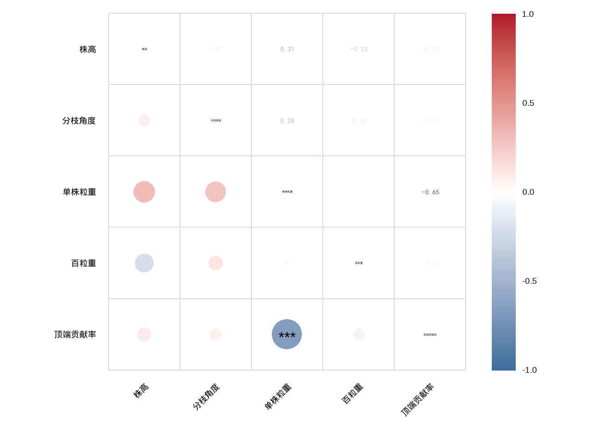
# D. 保存图片
cor_dir <- file.path(output_dir, "correlation")
if(!dir.exists(cor_dir)) dir.create(cor_dir)
ggsave(file.path(cor_dir, "Correlation_Analysis_Final.pdf"),
p_corr, width = 10, height = 9, device = cairo_pdf)弦图+主成分分析 (PCA)
# raw_data5
clean_data_for_pca <- raw_data5[, -1] # 移除编号列
first_for_pca <- raw_data5[1]
{
pdf("BZH.pdf", width = 12, height = 12)
# 2. 数据预处理：提取、标准化、计算组均值
group_col <- first_for_pca
colnames(group_col) <- "Group"
trait_data <- clean_data_for_pca # 其余列为性状
# 进行 scale 标准化
scaled_data <- scale(trait_data)
# 将分组信息拼接回去
df_processed <- data.frame(Group = group_col, scaled_data,check.names = FALSE)
# 按组求均值 (使用 dplyr)
agg_data <- df_processed %>%
group_by(df_processed[1]) %>%
summarise(across(everything(), mean))
# 转换为 circlize 需要的矩阵格式
# 矩阵的行名为分组(右侧)，列名为性状(左侧)
mat <- as.matrix(agg_data[, -1])
mat_h <- agg_data[1]
rownames(mat) <- agg_data$Group
# 定义组别和性状名称
rownames(mat) <- paste0(rownames(mat)," 万株/hm²")
groups <- rownames(mat)
colnames(mat) <- sapply(colnames(mat), function(trait) {
if (!trait %in% colnames(raw_suoxie)) {
return(trait)
} else {
unit_val <- raw_suoxie[[trait]]
if (!is.na(unit_val) && nzchar(unit_val)) {
return(unit_val)
} else {
return(trait)
}
}
}, USE.NAMES = FALSE)
traits <- colnames(mat)
smart_palette <- function(colors, n) {
if (n <= length(colors)) {
colors[1:n]
} else {
colorRampPalette(colors)(n)
}
}
# 设定颜色
group_colors <- c("#5BCBCB", "#FFB85D", "#E16D38", "#977DB9", "#FB7F7A", "#8C564B", "#E377C2",
"#17BECF", "#BCBD22", "#7CA741", "#FF7F0E", "#7F7F7F", "#3B75AF", "#E3B212",
"#C0504D", "#6D4B79", "#E16D38", "#6A7B8E", "#3A9C8C", "#277A55", "#5E98C5")
n_varsg <- nrow(mat)
group_colors <- smart_palette(group_colors, n_varsg)
# 为性状设定统一颜色或不同颜色
trait_colors <- c("#17BECF", "#BCBD22", "#7CA741", "#FF7F0E", "#7F7F7F", "#3B75AF", "#E3B212",
"#C0504D", "#6D4B79", "#E16D38", "#6A7B8E", "#F2545B", "#277A55", "#5E98C5")
n_varst <- ncol(mat)
trait_colors <- smart_palette(trait_colors, n_varst)
# 合并所有扇区的颜色
grid_col <- c(group_colors, trait_colors)
# 初始化画布
circos.clear()
# 设置画布参数
# gap.after 用于在“组别”和“性状”之间留下较大的空隙，区分左右两侧
# 假设 groups 是放在一起的，traits 是放在一起的
circos.par(
start.degree = 90, # 旋转图形，使大缺口位于上下方
gap.after = c(rep(1, length(groups)-1), 5, rep(1, length(traits)-1), 5),
track.margin = c(0, 0.01)
)
col_mat <- matrix(
ifelse(mat > 0, "#E16D3888", "#5BCBCB88"),
nrow = nrow(mat),
dimnames = dimnames(mat)
)
# 基础绘制：只画网格和连线，不画默认的标签和刻度（为了后面自定义更美观的标签）
cd <- chordDiagram(abs(mat),
grid.col = grid_col, # 扇区颜色
transparency = 0.7, # 连线透明度
order = c(groups, traits), # 强制排序，组别在一半，性状在另一半
annotationTrack = "grid", # 只保留扇形色块(grid)，去掉默认的文本
preAllocateTracks = list(track.height = max(strwidth(unlist(dimnames(mat)))))) # 预留外围写文字的空间
track_index <- 1 # grid 对应的 track，按实际调整
cd_sorted <- cd[order(cd$cn, cd$o2), ]
cd_sorted <- cd_sorted %>%
group_by(cn) %>%
mutate(
y1 = cumsum(value2) - value2,
y2 = cumsum(value2)
) %>%
ungroup()
# 覆盖 row 扇区（groups）分段
for (i in seq_len(nrow(cd_sorted))) {
rn <- cd_sorted$rn[i]
cn <- cd_sorted$cn[i]
sign_val <- mat[rn, cn]
seg_col <- ifelse(sign_val > 0, "yellow", "grey")
circos.rect(
xleft = cd_sorted$y1[i],
xright = cd_sorted$y2[i],
ybottom = -0.2,
ytop = -0.05,
sector.index = cn,
track.index = track_index,
col = seg_col,
border = NA
)
}
# 自定义添加外围标签和刻度线
circos.track(track.index = 1, panel.fun = function(x, y) {
sector.index = get.cell.meta.data("sector.index")
xlim = get.cell.meta.data("xlim")
# 添加外围文本标签
circos.text(mean(xlim), 0.5, sector.index,
facing = "inside", # 文字方向
niceFacing = TRUE,
adj = par("adj"), # 文字对齐方式
cex = 1.5) # 字体大小
max_tick_pos = ceiling(max(xlim) / 2) * 2
ticks = seq(from = 0, to = max_tick_pos, by = 2)
ticks_labels = ifelse(ticks <= max(xlim), as.character(ticks), "")
# 添加刻度轴seq(0, max(xlim), by = 2)
circos.axis(h = "top",
major.at = ticks,
labels = ticks_labels,
labels.cex = 1, # 刻度数字大小
major.tick.length = 1, # 刻度线长度
# sector.index = sector.index,
track.index = 2)
}, bg.border = NA) # 去除轨迹边框
par(xpd = NA)
# 添加水平图例，放置在图形底部外侧
legend(x = -1, y = 0.9, legend = c("正", "负"),
fill = c("yellow", "grey"), bty = "n", cex = 2)
# 绘制完成后清除参数设定
circos.clear()
dev.off()
}png
2 pca_result <- prcomp(clean_data_for_pca, scale. = TRUE)
first_var_signs <- sign(pca_result$rotation[1, ])
first_var_signs[first_var_signs == 0] <- 1
pca_result$rotation <- sweep(pca_result$rotation, 2, first_var_signs, "*")
pca_result$x <- sweep(pca_result$x, 2, first_var_signs, "*")
# 提取特征值与贡献率
eig_val <- pca_result$sdev^2
var_percent <- eig_val / sum(eig_val) * 100
cum_percent <- cumsum(var_percent)
# 确定提取的主成分个数 (特征值>1 或 累计贡献率>85%，这里默认取特征值>1)
num_pc <- which(cum_percent > 85)[1]
if(num_pc < 2) num_pc <- 2 # 至少取2个以便展示
# 提取特征向量 (Eigenvectors)
loadings <- pca_result$rotation[, 1:num_pc] %*% diag(pca_result$sdev[1:num_pc])
colnames(loadings) <- paste0("PC", 1:num_pc)
# --- 生成类似图5 (表3) 的PCA特征值表 ---
pca_info_table <- data.frame(
性状 = rownames(loadings),
loadings, # 载荷
stringsAsFactors = FALSE
)
pca_info_table$共同度 <- rowSums(loadings^2)
pca_info_table$共同度 <- sprintf("%.3f", pca_info_table$共同度)
# 添加特征值等信息行 (需要转置合并，稍微复杂一点，为了格式美观)
extra_info <- matrix(NA, nrow=3, ncol=ncol(pca_info_table))
extra_info[,1] <- c("特征值", "方差贡献率 (%)", "累计贡献率 (%)")
extra_info[,2:(num_pc+1)] <- rbind(round(eig_val[1:num_pc], 2),
round(var_percent[1:num_pc], 2),
round(cum_percent[1:num_pc], 2))
pca_output_table <- rbind(pca_info_table,
setNames(as.data.frame(extra_info), names(pca_info_table)))
pca_rounded <- pca_output_table
# 载荷部分（除第一列外）保留3位
for (j in 2:(num_pc + 1)) {
col_vals <- pca_rounded[[j]]
# 尝试转数值
num_vals <- suppressWarnings(as.numeric(col_vals))
if (!all(is.na(num_vals))) {
# 前 (nrow - 3) 行是载荷 → 3位小数
n_traits <- nrow(pca_rounded) - 3
pca_rounded[1:n_traits, j] <- sprintf("%.3f", num_vals[1:n_traits])
# 最后3行：特征值、贡献率、累计贡献率 → 3位小数
pca_rounded[(n_traits + 1):(n_traits + 3), j] <- sprintf("%.3f", num_vals[(n_traits + 1):(n_traits + 3)])
}
}
print(pca_rounded) 性状 PC1 PC2 共同度
产量 产量 0.988 0.152 1.000
株高 株高 0.980 0.199 1.000
分枝角度 分枝角度 -1.000 -0.017 1.000
单株粒重 单株粒重 0.978 0.210 1.000
百粒重 百粒重 -0.558 0.830 1.000
顶端贡献率 顶端贡献率 -0.994 0.106 1.000
1 特征值 5.190 0.810 <NA>
2 方差贡献率 (%) 86.540 13.460 <NA>
3 累计贡献率 (%) 86.540 100.000 <NA>主成分分析图
PCA_dir <- file.path(output_dir, "PCA")
{edge_exe <- "C:/Program Files (x86)/Microsoft/Edge/Application/msedge.exe"
Sys.setenv(CHROMOTE_CHROME = edge_exe)
smart_pca_visualize_save <- function(pca_res, var_pct) {
scores <- as.data.frame(pca_res$x)
n_samples <- nrow(scores)
n_pcs <- ncol(scores)
cat(sprintf("检测到数据: %d 个样本, %d 个主成分。\n", n_samples, n_pcs))
color_palettes <- list(
c("#000000", "#000000", "#000000"),
c("#E6B450", "#8B4513", "#ADD8E6"),
c("#556B2F", "#007000", "#90C999"),
c("#CD5C5C", "#8B0000", "#FFDAB9"),
c("#9370DB", "#4B0082", "#D8BFD8"),
c("#4682B4", "#000080", "#E6E6FA")
)
# 用于收集结果以便在 RStudio 显示
plot_list <- list()
# --- 4. 逻辑分流与绘图 ---
#改图大小 ------------------
if (n_pcs == 2) {
cat("主成分为 2 列，生成 2D 图...\n")
p <- plot_pca_2d_core(pca_res, var_pct, dims = c(1, 2))
file_name <- file.path(PCA_dir, "PCA_2D_PC1-PC2.html")
saveWidget(p, file_name, selfcontained = TRUE)
pdf_file <- file.path(PCA_dir, "PCA_2D_PC1-PC2.pdf")
webshot2::webshot(
url = file_name,
file = pdf_file,
selector = ".html-widget",
#vwidth = 800,
#vheight = 600,
delay = 1,
zoom = 2
)
system2("pdfcrop", args = c(shQuote(pdf_file), shQuote(pdf_file)))
cat(sprintf(" -> 已保存: %s\n", file_name))
return(p)
}
#tryCatch({webshot2::webshot(url = normalizePath(html_name), file = pdf_name, vwidth = 1200, vheight = 900, delay = 0.5)cat(sprintf(" -> 已保存 pdf : %s\n", pdf_name))}, error = function(e) {cat(sprintf(" -> [错误] 2D pdf 保存失败: %s\n", e$message))})
# === 情况 B: 3个及以上主成分 -> 画 3D 图 (多图策略) ===
else {
# 计算需要画几张图
# 比如 7 列: ceiling(7/3) = 3 张图
num_plots <- ceiling(n_pcs / 3)
for (i in 1:num_plots) {
# --- 关键逻辑：计算当前图包含哪几列 ---
if (i < num_plots) {
# 如果不是最后一张图，按顺序取3个 (1-2-3, 4-5-6...)
current_dims <- c((i - 1) * 3 + 1, (i - 1) * 3 + 2, (i - 1) * 3 + 3)
} else {
# *** 如果是最后一张图 ***
# 强制取“最后3个”主成分。
# 例如总共7个: 这里的逻辑是取 5, 6, 7 (而不是 7, 0, 0)
# 例如总共6个: 这里的逻辑是取 4, 5, 6 (刚好吻合)
current_dims <- c(n_pcs - 2, n_pcs - 1, n_pcs)
}
# 选取颜色 (循环使用)
color_idx <- (i - 1) %% length(color_palettes) + 1
current_colors <- color_palettes[[color_idx]]
dims_label <- paste(current_dims, collapse = "-")
cat(sprintf(" -> 处理图表 %d: PCs [%s] (配色方案 %d)...\n", i, dims_label, color_idx))
# 调用绘图核心
p <- plot_pca_3d_core(pca_res, var_pct, dims = current_dims)
# 保存文件
file_name <- file.path(PCA_dir, paste0("PCA_3D_Part", i, "_PC", dims_label, ".html"))
saveWidget(p, file_name, selfcontained = TRUE)
pdf_file <- file.path(PCA_dir, paste0("PCA_3D_Part", i, "_PC", dims_label, ".pdf"))
plotly::save_image(p, pdf_file, width = 1200, height = 1200, scale = 6)
#左底部右顶部
# pdf_file <- file.path(PCA_dir, paste0("PCA_3D_Part", 1, "_PC", "1-2-3", ".pdf"))
# bbox_arg <- paste0('--bbox "', 0, ' ',0, ' ',5000, ' ', 5000, '"')
# system2("pdfcrop", args = c(bbox_arg,shQuote(pdf_file), shQuote(pdf_file)))
plot_list[[i]] <- p
}
cat("所有图表处理完毕。\n")
return(htmltools::tagList(plot_list))
}
}
# p <- plot_pca_3d_core(pca_res, var_pct, dims = current_dims)
# dims <- c(1,2,3)
# pca_res <- pca_result_selected
# var_pct <- var_percent
plot_pca_3d_core <- function(pca_res, var_pct, dims) {
ellip_col <-var_colors[dims]
# 根据 dims 提取特定的3列数据
# 因为主函数逻辑保证了 dims 肯定是3个有效整数(如 5,6,7)，这里直接取即可
scores_subset <- as.data.frame(pca_res$x[, dims])
rot_subset <- as.data.frame(pca_res$loadings[, dims])
colnames(scores_subset) <- c("X", "Y", "Z")
colnames(rot_subset) <- c("X", "Y", "Z")
raw_names <- rownames(rot_subset)
common_cols <- intersect(raw_names, colnames(raw_suoxie))
raw_names[raw_names %in% common_cols] <-
paste0(raw_suoxie[1,common_cols])
formatted_names <- raw_names
# 比例缩放
r_scores <- max(abs(scores_subset))
r_loadings <- max(abs(rot_subset))
scale_factor <- (r_scores / r_loadings) * 0.85
loadings_scaled <- rot_subset * scale_factor
# 椭球计算 (对应维度的 SD)
sd_vec <- pca_res$sdev[dims]
theta <- seq(0, 2*pi, length.out=30)
phi <- seq(0, pi, length.out=15)
grd <- expand.grid(theta=theta, phi=phi)
#椭圆 95%置信区间1D：2σ≈95.4% 2D：2σ≈86.5% 3D：2σ≈73.9% 2.795σ≈95%
x_ell <- 2.795 * sd_vec[1] * cos(grd$theta) * sin(grd$phi)
y_ell <- 2.795 * sd_vec[2] * sin(grd$theta) * sin(grd$phi)
z_ell <- 2.795 * sd_vec[3] * cos(grd$phi)
x_mat <- matrix(x_ell, nrow=length(theta))
y_mat <- matrix(y_ell, nrow=length(theta))
z_mat <- matrix(z_ell, nrow=length(theta))
# 轴标签
ax_labs <- paste0("PC", dims, " (", round(var_pct[dims], 2), "%)")
# 绘图配置
axis_template <- list(showgrid = TRUE, gridcolor = "#d9d9d9", backgroundcolor = "white",
zerolinecolor = "#999999")
n_vars <- nrow(loadings_scaled)
var_colors <- colorRampPalette(var_colors)(n_vars)
p <- plot_ly() %>%
#椭圆 95%置信区间 list(c(0, 1), c(ellip_col ,ellip_col))
add_surface(x = x_mat, y = y_mat, z = z_mat,
opacity = 0.1, colorscale = list(c(0, 1), c(ellip_col ,ellip_col)),
showscale = FALSE, hoverinfo = "none", name = "95% Ellipse") %>%
#样品点
add_trace(data = scores_subset, x = ~X, y = ~Y, z = ~Z,
type = 'scatter3d', mode = 'markers',
marker = list(size = 8, color = var_colors[1], opacity = 0.9),
text = rownames(scores_subset), showlegend = FALSE)
# 画线
for (i in 1:nrow(loadings_scaled)) {
line_x <- c(0, loadings_scaled[i, 1]*0.95)
line_y <- c(0, loadings_scaled[i, 2]*0.95)
line_z <- c(0, loadings_scaled[i, 3]*0.95)
p <- add_trace(p, x = line_x, y = line_y, z = line_z, type = 'scatter3d', mode = 'lines',
line = list(color = var_colors[i], width = 4), showlegend = FALSE, hoverinfo = "none")
}
# 画箭头头
chang <-max(loadings_scaled[i, 1],loadings_scaled[i, 2]*0.95,loadings_scaled[i, 3]*0.95)
for (i in 1:nrow(loadings_scaled)) {
p <- add_trace(p, x = loadings_scaled$X[i], y = loadings_scaled$Y[i], z = loadings_scaled$Z[i],
u = loadings_scaled$X[i], v = loadings_scaled$Y[i], w = loadings_scaled$Z[i],
type = "cone", showscale = FALSE, sizemode = "absolute", sizeref = chang*0.2, anchor = "tip",
colorscale = list(c(0, 1), c(var_colors[i], var_colors[i])), name="Loadings",
hoverinfo = "text", text = raw_names)
}
# 画文字
p <- add_trace(p, x = loadings_scaled$X * 1.15, y = loadings_scaled$Y * 1.15, z = loadings_scaled$Z * 1.15,
type = 'scatter3d', mode = 'text', text = formatted_names,
textfont = list(color = var_colors, size = 34, family="Times New Roman"),
showlegend = FALSE, hoverinfo = "none")
p <- layout(p, scene = list(
xaxis = list(title = ax_labs[1],
titlefont = list(family = "Times New Roman Bold",size = 32,color="black"),
tickfont = list(family = "Times New Roman Bold",size = 20,color="black")),
yaxis = list(title = ax_labs[2],
titlefont = list(family = "Times New Roman Bold",size = 32,color="black"),
tickfont = list(family = "Times New Roman",size = 20,color="black")),
zaxis = list(title = ax_labs[3],
titlefont = list(family = "Times New Roman Bold",size = 32,color="black"),
tickfont = list(family = "Times New Roman",size = 20,color="black")),
aspectmode = "cube", camera = list(eye = list(x=1.2, y=1.2, z=1.4)),
domain = list(x = c(0, 1), y = c(0, 1))),
margin = list(l=0, r=0, b=0, t=0, pad = 0), paper_bgcolor = "white", showlegend=FALSE,
annotations = list( # 新添加的注释
text = formula_text,
x = 0.7, y = 0.9,
xref = "paper", yref = "paper",
showarrow = FALSE,
font = list(family = "Times New Roman",size = 30)
))
p
return(p)
}
# final_output <- smart_pca_visualize_save(pca_result_selected, var_percent)
# p <- plot_pca_2d_core(pca_res, var_pct, dims = c(1, 2), colors = var_colors)
# pca_res <- pca_result_selected
# var_pct <- var_percent
var_colors <- c("#E6B450", "#8B4513", "#ADD8E6","#556B2F", "#007000",
"#8B0000", "#9370DB", "#4B0082", "#4682B4", "#000080", "#DD9AB5")
plot_pca_2d_core <- function(pca_res, var_pct, dims=c(1,2)) {
point_col <- var_colors[1]
# 1. 准备数据
scores <- as.data.frame(pca_res$x[, dims])
colnames(scores) <- c("X", "Y")
loadings <- as.data.frame(pca_res$loadings[, dims])
colnames(loadings) <- c("X", "Y")
# 2. 计算缩放比例
r_scores <- max(abs(scores))
r_loadings <- max(abs(loadings))
scale_factor <- (r_scores / r_loadings) * 0.85
loadings_scaled <- loadings * scale_factor
ax_labs <- paste0("<b>PC", dims, " (", round(var_pct[dims], 2), "%)</b>")
# 4. 绘图
loadings1 <- rownames(loadings)
valid_cols <- loadings1[loadings1 %in% colnames(raw_suoxie)]
loadings1[loadings1 %in% colnames(raw_suoxie)] <-paste0(raw_suoxie[,valid_cols])
angles <- atan2(loadings_scaled$Y, loadings_scaled$X)
# 创建数据框方便操作
loadings_df <- data.frame(
loadings_scaled,
angle = angles,
raw_name = rownames(loadings),
abbrev = loadings1
)
n_vars <- nrow(loadings_df)
var_colors <- colorRampPalette(var_colors)(n_vars)
# 按角度排序
loadings_df <- loadings_df[order(loadings_df$angle), ]
loadings_df$color <- var_colors # 在 order() 之前赋值
n <- nrow(loadings_df)
scale_factors <- rep(c(1.2, 1.1), length.out = n)
text_opacity <- 1 # 调整透明度
# 将 hex 转为 rgba 的辅助函数
hex_to_rgba <- function(hex, alpha) {
rgb_val <- col2rgb(hex)
sprintf("rgba(%d,%d,%d,%.2f)", rgb_val[1], rgb_val[2], rgb_val[3], alpha)
}
text_colors_rgba <- sapply(loadings_df$color, hex_to_rgba, alpha = text_opacity)
arrows <- list()
for(i in 1:nrow(loadings_df)) {
arrows[[i]] <- list(
x = loadings_df$X[i], # 箭头尖端 X
y = loadings_df$Y[i], # 箭头尖端 Y
xref = "x", yref = "y", # 尖端参考坐标系：数据轴
ax = 0, ay = 0, # 箭头尾部坐标：原点 (0,0)
axref = "x", ayref = "y", # [关键] 尾部参考坐标系：设为"x"和"y"而非默认的"pixel"
text = "", # 箭头本身不带文字（文字单独用 add_text 加）
showarrow = TRUE,
arrowhead = 2, # 箭头样式 (2号比较标准，3号更尖)
arrowsize = 1, # 箭头大小
arrowwidth = 2, # 线条宽度
arrowcolor = loadings_df$color[i]
)
}
# 计算文本坐标
text_x <- loadings_df$X * 1.2
text_y <- loadings_df$Y * scale_factors
p <- plot_ly() %>%
# A. 画样本点
add_trace(data = scores, x = ~X, y = ~Y, type = 'scatter', mode = 'markers',
marker = list(size = 10, color = point_col, opacity = 0.8),
text = rownames(scores), hoverinfo = "text",
showlegend = FALSE) %>%
#B. 画文字标签 (向外推一点)
add_text(x = loadings_df$X * 1.2,
y = loadings_df$Y * scale_factors,
text = loadings_df$abbrev,
textfont = list(color = text_colors_rgba, size = 30),
showlegend = FALSE) %>%
# C. 布局设置 (并将箭头列表传入)
layout(
xaxis = list(
title = list(
text = ax_labs[1],
font = list(color = "black", size = 30, weight = "bold")
),
zeroline = TRUE, # 显示通过(0,0)的线
zerolinewidth = 1,
zerolinecolor = "black",
showgrid = FALSE, # 【核心】关闭网格线
showline = TRUE, # 【新增】显示底部坐标轴实线
linecolor = "black", # 坐标轴实线颜色
ticks = "outside", # 【新增】刻度线朝外
ticklen = 5,
tickfont = list(color = "black", size = 30)
),
yaxis = list(
title = list(
text = ax_labs[2],
font = list(color = "black", size = 30, weight = "bold")
),
zeroline = TRUE,
zerolinewidth = 1,
zerolinecolor = "black",
showgrid = FALSE, # 【核心】关闭网格线
showline = TRUE, # 【新增】显示左侧坐标轴实线
linecolor = "black",
ticks = "outside",
ticklen = 5,
tickfont = list(color = "black", size = 30)
),
plot_bgcolor = "white", # 背景设为白色
paper_bgcolor = "white", # 画布背景设为白色
showlegend = FALSE,
margin = list(t=30, b=50, l=50, r=30), # 稍微调整边距防止文字被切
annotations = arrows # 传入箭头
)
print(p)
return(p)
}
pca_result_selected <- pca_result
pca_result_selected$x <- pca_result$x[, 1:num_pc]
pca_result_selected$loadings <- loadings
pca_result_selected$sdev <- pca_result$sdev[1:num_pc]
# pca_result_selected$x 与 df_processed[,2] 多元回归
{y <- df_processed[, 2]
X <- as.data.frame(pca_result_selected$x)
model <- lm(y ~ ., data = X)
summary(model)
summary(model)$r.squared
model_std <- lm(scale(y) ~ scale(as.matrix(X)))
summary(model_std)
coef_std <- coef(model_std)[-1]
RF <- coef(model_std)[-1]^2/summary(model)$r.squared*100
# 提取回归系数
coefs <- coef(model)
# 构建公式文本
intercept <- coefs[1]
first_coefs <- coefs[2]
pc_coefs <- coefs[-c(1,2)] # 去掉截距
pc_coefs1 <- coefs[-1]
first_trems<- paste0(
ifelse(first_coefs >= 0, "", ""),
round(first_coefs, 3),
names(first_coefs)
)
terms <- paste0(
ifelse(pc_coefs >= 0, "+", ""),
round(pc_coefs, 3),
names(pc_coefs)
)
beita <- paste0(
"β(",
names(pc_coefs1),
") = ",
round(coef_std, 3)
)
if (abs(intercept) >= 0.001) {
intercept_term <- paste0(ifelse(intercept >= 0, " + ", " - "), round(abs(intercept), 3))
} else intercept_term <- ""
formula_text <- paste0("R² = ",round(summary(model)$r.squared, 2),"\n",
"Y = ",first_trems,paste(terms, collapse = " "),intercept_term,"\n",
paste(beita, collapse = " ")
)}
final_output <- smart_pca_visualize_save(pca_result_selected, var_percent)
}检测到数据: 3 个样本, 2 个主成分。
主成分为 2 列，生成 2D 图... -> 已保存: ceshi/PCA/PCA_2D_PC1-PC2.html隶属函数分析与 D值计算
# pca_result
if (!first_value %in% colnames(raw_danwei))
{first_valuedanwei <- first_value
} else {unit_val <- raw_danwei[[first_value]]
if (!is.na(unit_val) && nzchar(unit_val)) {
first_valuedanwei <- paste0(first_value, "(", unit_val, ")")}
else {first_valuedanwei <- first_value}}
# 计算得分 (Scores)
pc_scores <- as.data.frame(pca_result$x[, 1:num_pc])
#pc_scores <- as.data.frame(pca_result$x[, 1:num_pc] %*% diag(1/pca_result$sdev[1:num_pc]))
#colnames(pc_scores) <- paste0("PC", 1:num_pc)
# 定义隶属函数 u(X)
# 公式: (X - Xmin) / (Xmax - Xmin)
calc_membership <- function(x){(x - min(x)) / (max(x) - min(x))}
u_values <- as.data.frame(lapply(pc_scores, calc_membership))
colnames(u_values) <- paste0("U", 1:ncol(u_values))
# 计算权重 (基于方差贡献率)
weights <- var_percent[1:num_pc] / sum(var_percent[1:num_pc])
# 计算综合评价值 (D值)
d_values <- as.matrix(u_values) %*% weights
final_rank <- rank(-d_values) # 降序排名
colnames(raw_data5)[1] <- first_valuedanwei
first_for_pca <- raw_data5[1]
# --- 生成类似图4 (表X) 的综合排名表 ---
# 包含: PC得分, U值, D值, 排名
comprehensive_table <- data.frame(
first_for_pca,
round(pc_scores, 2),
round(u_values, 2),
D = round(d_values, 4),
综合排序 = final_rank,
check.names = FALSE
)
# 将D值加入原始数据，用于后续回归和通径分析
data_with_D <- raw_data5
data_with_D$D <- as.vector(d_values)
comp_rounded <- comprehensive_table
pc_cols <- grep("^PC", names(comp_rounded))
for (col in pc_cols) {
comp_rounded[[col]] <- sprintf("%.2f", as.numeric(comp_rounded[[col]]))
}
u_cols <- grep("^U", names(comp_rounded))
for (col in u_cols) {
comp_rounded[[col]] <- sprintf("%.2f", as.numeric(comp_rounded[[col]]))
}
comp_rounded$D <- sprintf("%.2f", as.numeric(comp_rounded$D))
comp_rounded$综合排序 <- as.character(as.integer(comp_rounded$综合排序))
print(comp_rounded) 密度(万株/hm²) PC1 PC2 U1 U2 D 综合排序
1 24 -2.18 -0.58 0.00 0.00 0.00 3
2 30 -0.18 1.04 0.44 1.00 0.52 2
3 34 2.36 -0.46 1.00 0.08 0.88 1逐步回归
# raw_data4
# 逐步回归
clean_data <- raw_data4[, -c(1,2)]
n_cols <- ncol(clean_data)
clean_data <- as.data.frame(clean_data)
# 分离自变量和因变量
y_raw <- clean_data[, "单株粒重"] # 最后一列
x_raw <- clean_data[, setdiff(names(clean_data), "单株粒重")] # 前面的列
# 变量重命名
original_x_names <- colnames(x_raw)
new_x_names <- paste0("X", 1:length(original_x_names))
# 创建用于分析的数据框
reg_data_renamed <- x_raw
colnames(reg_data_renamed) <- new_x_names
reg_data_renamed$y <- y_raw
# 预处理：基于 VIF 剔除共线性强的变量 (VIF < 10)==========================================================
# 创建用于筛选的数据副本
data_for_screening <- reg_data_renamed
dep_var <- "y"
# 循环直到所有 VIF < 10 或只剩下一个变量
vif_ok <- FALSE
round_num <- 0
while(!vif_ok) {
round_num <- round_num + 1
# 获取当前所有自变量
predictors <- setdiff(names(data_for_screening), dep_var)
# 如果只剩1个或0个自变量，无法/无需计算VIF，直接停止
if(length(predictors) <= 1) {
cat("剩余变量不足 2 个，停止 VIF 筛选。\n")
break
}
# 建立全模型 (包含当前所有剩余变量)
full_formula <- as.formula(paste(dep_var, "~ ."))
full_model <- lm(full_formula, data = data_for_screening)
# 计算 VIF
# 注意：如果存在完全共线性(Aliased)，vif()可能会报错，这里假设数据已经过基础清洗
# 如果需要更稳健，可以加 tryCatch，但通常 lm 会自动处理 NA 系数
# 检查模型是否存在 NA 系数 (完全共线性)
if(any(is.na(coef(full_model)))) {
# 移除导致 NA 的变量
na_vars <- names(which(is.na(coef(full_model))))
cat(sprintf("轮次 %d: 发现完全共线性变量 %s，已移除。\n", round_num, paste(na_vars, collapse=",")))
data_for_screening <- data_for_screening[, !names(data_for_screening) %in% na_vars]
next #以此状态重新开始循环
}
vif_vals <- vif(full_model)
max_vif <- max(vif_vals)
if(max_vif < 10) {
vif_ok <- TRUE
} else {
# 找出 VIF 最大的变量并移除
bad_var <- names(which.max(vif_vals))
cat(sprintf("轮次 %d: 移除变量 %s (VIF = %.3f)\n", round_num, bad_var, max_vif))
# 从数据集中移除该列
data_for_screening <- data_for_screening[, !names(data_for_screening) %in% bad_var]
}
}
spss_stepwise <- function(data, dependent_var_name, p_enter = 0.05, p_remove = 0.10) {
dep_var <- dependent_var_name
# 1. 明确获取所有预测变量的名称 (排除因变量)
predictors <- setdiff(names(data), dep_var)
# 2. 构建显式的最大模型公式 (例如: y ~ X1 + X2 + X3)
# 这样 add1 函数就不会因为找不到 scope 而报错
rhs_formula <- paste(predictors, collapse = " + ")
scope_formula <- as.formula(paste(dep_var, "~", rhs_formula))
# 3. 初始模型：只包含截距 (y ~ 1)
current_model <- lm(as.formula(paste(dep_var, "~ 1")), data = data)
steps_history <- list()
step_count <- 0
# 记录初始状态
step_count <- step_count + 1
steps_history[[step_count]] <- list(model = current_model, action = "Start")
changed <- TRUE
while(changed) {
changed <- FALSE
# A. Forward Selection (Entry P <= 0.05)
# add1 会对比当前模型和 scope 范围内的差异
add_test <- add1(current_model, scope = scope_formula, test = "F")
candidates <- add_test[!rownames(add_test) %in% c("<none>"), ]
best_var <- NULL
if (nrow(candidates) > 0) {
min_p_idx <- which.min(candidates$`Pr(>F)`)
best_p <- candidates$`Pr(>F)`[min_p_idx]
if (best_p <= p_enter) {
best_var <- rownames(candidates)[min_p_idx]
}
}
if (!is.null(best_var)) {
# 更新模型
current_model <- update(current_model, paste(". ~ . +", best_var))
changed <- TRUE
step_count <- step_count + 1
steps_history[[step_count]] <- list(model = current_model, action = "Entered")
}
# B. Backward Elimination (Removal P >= 0.10)
# 只有当模型中不仅有截距时才检查
if (length(coef(current_model)) > 1) {
drop_test <- drop1(current_model, test = "F")
candidates_drop <- drop_test[!rownames(drop_test) %in% c("<none>"), ]
worst_var <- NULL
if (nrow(candidates_drop) > 0) {
max_p_idx <- which.max(candidates_drop$`Pr(>F)`)
worst_p <- candidates_drop$`Pr(>F)`[max_p_idx]
if (worst_p >= p_remove) {
worst_var <- rownames(candidates_drop)[max_p_idx]
}
}
if (!is.null(worst_var)) {
current_model <- update(current_model, paste(". ~ . -", worst_var))
changed <- TRUE
steps_history[[step_count]] <- NULL
break
}
}
}
return(steps_history)
}
trait_map <- data.frame(
变量 = new_x_names,
性状 = original_x_names,
stringsAsFactors = FALSE
)
stepwise_results <- spss_stepwise(data_for_screening, "y")
entered_vars_order <- character()
output_rows <- list()
#new_x_names <- paste0("X", 1:length(original_x_names))
if (length(stepwise_results) > 1) {
# 遍历每一步（跳过第1步空模型）
for (i in 2:length(stepwise_results)) {
res <- stepwise_results[[i]]
mod <- res$model
summ <- summary(mod)
# 构建方程字符串
coeffs <- coef(mod)
intercept <- coeffs[1]
# 修改1：更新变量进入顺序列表
current_model_vars <- names(coeffs)[-1]
new_entered <- setdiff(current_model_vars, entered_vars_order)
entered_vars_order <- c(entered_vars_order, new_entered)
eq_str <- paste0("y = ", sprintf("%.3f", intercept))
if (length(coeffs) > 1) {
terms <- c()
for (j in 2:length(coeffs)) {
val <- coeffs[j]
# 修改2：根据进入顺序生成显示名称
raw_name <- names(coeffs)[j]
x_index <- match(raw_name, entered_vars_order)
display_name <- paste0("X", x_index)
sign_str <- ifelse(val >= 0, " + ", " - ")
terms <- c(terms, paste0(sign_str, sprintf("%.3f", abs(val)), display_name))
}
eq_str <- paste0(eq_str, paste(terms, collapse = ""))
}
# 提取统计量
f_stat <- summ$fstatistic[1]
p_val <- pf(f_stat, summ$fstatistic[2], summ$fstatistic[3], lower.tail = FALSE)
output_rows[[i-1]] <- data.frame(
"多元回归方程" = eq_str,
"R²" = round(summ$r.squared, 4),
"调整R²" = round(summ$adj.r.squared, 4),
"F值" = round(f_stat, 2),
"P值" = ifelse(p_val < 0.001, "< 0.001", round(p_val, 3)),
stringsAsFactors = FALSE,
check.names = FALSE
)
}
# 合并结果
regression_table <- do.call(rbind, output_rows)
# --- 5. 添加变量映射说明行 ---
original_x_names <- trait_map$性状[match(current_model_vars, trait_map$变量)]
new_x_names <- paste0("X", 1:(length(coeffs)-1))
# 构建映射文本
mapping_text <- paste(paste(new_x_names, original_x_names, sep="为"), collapse="；")
# 创建说明行
new_row <- data.frame(
"多元回归方程" = paste("注：", mapping_text),
"R²" = "",
"调整R²" = "",
"F值" = "",
"P值" = "",
stringsAsFactors = FALSE,
check.names = FALSE
)
}
reg_rounded <- regression_table
print(regression_table) 多元回归方程 R² 调整R² F值 P值
value y = 24.292 - 0.326X1 0.4260 0.4000 16.33 < 0.001
value1 y = 7.715 - 0.344X1 + 0.290X2 0.5644 0.5230 13.61 < 0.001
value2 y = 4.059 - 0.354X1 + 0.275X2 + 0.252X3 0.6542 0.6024 12.61 < 0.001通径分析+灰色关联度分析
# reg_data_renamed
# 通径分析 (Path Analysis
path_data <- reg_data_renamed[,c(names(coeffs)[-1], "y")]
colnames(path_data) <- c(new_x_names, "y")
selected_vars <- new_x_names # 排除截距
#selected_vars <- colnames(raw_data5)[-c(1:13)]
selected_vars2 <- paste0("→",selected_vars)
selected_vars3 <- selected_vars
#selected_vars <- trait_map$性状[match(selected_vars, trait_map$变量)]
if(length(selected_vars) > 0){
# 计算相关系数矩阵
sub_data <- path_data
if(sum(is.na(sub_data)) > 0){
sub_data <- na.omit(sub_data)
}
cor_mat <- cor(sub_data)
# 直接通径系数 (即标准化回归系数 - Beta)
# 标准化数据再回归一次可得 Beta
std_data <- as.data.frame(scale(sub_data))
path_model <- lm(y ~ ., data = std_data)
direct_coefs <- coef(path_model)[-1]
# 初始化通径分析表
path_table <- matrix(0, nrow = length(selected_vars), ncol = length(selected_vars) + 4)
rownames(path_table) <- selected_vars
colnames(path_table) <- c("变量", "相关系数", "直接作用", selected_vars,"决策系数")
for(i in 1:length(selected_vars)){
var_name <- selected_vars[i]
path_table[i, "变量"] <- selected_vars3[i]
# 相关系数
path_table[i, "相关系数"] <- round(cor_mat[var_name, "y"], 3)
# 直接作用
path_table[i, "直接作用"] <- round(direct_coefs[var_name], 3)
# 间接作用 - 填充所有单元格
for(j in 1:length(selected_vars)){
target_var <- selected_vars[j]
if(i == j) {
# 主对角线：自身对自身的间接作用为0或空
path_table[i, target_var] <- ""
} else {
# 非对角线：计算间接作用
r_ij <- cor_mat[var_name, target_var]
matched_name <- grep(target_var, names(direct_coefs), value = TRUE)
indirect_effect <- r_ij * direct_coefs[matched_name]
# 如果值为0（或接近0），则显示为空
if(abs(indirect_effect) < 0.001) {
path_table[i, target_var] <- ""
} else {
path_table[i, target_var] <- round(indirect_effect, 3)
}
}
}
}
colnames(path_table) <- c("变量", "相关系数", "直接作用", selected_vars2,"决策系数")
# 将矩阵转换为数据框
path_output_table <- as.data.frame(path_table, stringsAsFactors = FALSE)
path_output_table$相关系数 <- as.numeric(path_output_table$相关系数)
path_output_table$直接作用 <- as.numeric(path_output_table$直接作用)
#path_output_table$决策系数 <- as.numeric(path_output_table$决策系数)
path_output_table$决策系数 <- sprintf(
"%.3f",
2*path_output_table$相关系数 * path_output_table$直接作用 - path_output_table$直接作用^2
)
# 确保列类型正确
for(col in colnames(path_output_table)){
if(col != "变量"){
# 尝试转换为数值，如果失败则保持为字符
num_vals <- suppressWarnings(as.numeric(path_output_table[[col]]))
if(!all(is.na(num_vals))) {
path_output_table[[col]] <- num_vals
}
}
}
} else {
path_output_table <- data.frame(Message="未筛选出显著变量，无法进行通径分析")
}
path_rounded <- path_output_table
print(path_rounded) 变量 相关系数 直接作用 →X1 →X2 →X3 决策系数
X1 X1 -0.653 -0.709 NA 0.034 0.022 0.423
X2 X2 0.307 0.353 -0.069 NA 0.022 0.092
X3 X3 0.276 0.301 -0.051 0.026 NA 0.076# 5. 灰色关联度分析 (Grey Relational Analysis)------
# reg_data_renamed
# 参考序列: y (标准化)
# 比较序列: 所有的 X (标准化)
reg_data_renamed1 <- na.omit(reg_data_renamed)
ref_seq <- reg_data_renamed1$y
comp_seq <- reg_data_renamed1[, -ncol(reg_data_renamed1)] # 去掉y列
# 均值化处理 (Dimensionless processing)
normalize_mean <- function(x) { x / mean(x) }
ref_norm <- normalize_mean(ref_seq)
comp_norm <- as.data.frame(lapply(comp_seq, normalize_mean))
# 计算关联系数
rho <- 0.5 # 分辨系数
abs_diff_matrix <- abs(sweep(comp_norm, 1, ref_norm, "-")) # |X0 - Xi|
min_diff <- min(abs_diff_matrix)
max_diff <- max(abs_diff_matrix)
# 关联系数矩阵
xi_matrix <- (min_diff + rho * max_diff) / (abs_diff_matrix + rho * max_diff)
# 计算关联度 (取均值)
grey_degree <- colMeans(xi_matrix)
grey_rank <- rank(-grey_degree)
# --- 生成类似图2 (表X) 的灰色关联度表 ---
# 包含: 关联度, 排名, 权重(可选, 归一化关联度)
grey_table <- data.frame(
性状 = colnames(x_raw),
关联度 = round(grey_degree, 4),
位次 = grey_rank
)
# 计算权重 (基于关联度占比)
grey_table$权重 <- round(grey_table$关联度 / sum(grey_table$关联度), 4)
grey_rounded <- grey_table
grey_rounded$关联度<- sprintf("%.4f", as.numeric(grey_rounded$关联度))
grey_rounded$权重 <- sprintf("%.4f", as.numeric(grey_rounded$权重))
grey_rounded$位次 <- as.character(as.integer(grey_rounded$位次))
print(grey_rounded) 性状 关联度 位次 权重
X1 株高 0.7546 1 0.2709
X2 分枝角度 0.7168 3 0.2573
X3 百粒重 0.7486 2 0.2687
X4 顶端贡献率 0.5657 4 0.2031TOPSIS
# clean_data_for_pca
X <- as.matrix(clean_data_for_pca)
n <- nrow(X) # 样本数
m <- ncol(X) # 指标数
# --- Step 1: 正向化与标准化 (Min-Max Normalization) ---
# 假设所有指标都是"正向指标"（数值越大越好，如生物量、产量）
# 如果有负向指标（越小越好），计算方式需改为 (max-x)/(max-min)
X_norm <- apply(X, 2, function(x) {
if(max(x) == min(x)) return(rep(1, length(x))) # 防止分母为0
(max(x)-x)/(max(x)-min(x))
})
# --- Step 2: 熵权法 (Entropy Weight) ---
# 计算比重 P_ij
P <- apply(X_norm, 2, function(x) x / sum(x))
# 计算熵值 e_j
# 引入微小量 1e-12 防止 log(0)
k <- 1 / log(n)
e_j <- -k * colSums(P * log(P+ 1e-12))
# 处理特殊情况：如果某列数值完全相同，熵可能溢出或为NaN，修正为1
#e_j[is.na(e_j)] <- 1
# 计算差异系数 d_j
d_j <- 1 - e_j
# 计算权重 w_j
w_j <- d_j / sum(d_j)
# 生成结果表 1：熵权结果
entropy_result <- data.frame(
性状 = names(w_j),
熵值 = round(e_j, 3),
差异系数 = round(d_j, 3),
权重 = round(w_j * 100, 3) # 转换为百分比
)
colnames(entropy_result)[4] <- "权重(%)"
# --- Step 3: TOPSIS 计算 ---
# 构建加权规范化矩阵
Z <- t(t(X_norm) * w_j)
# 确定正理想解 (Z+) 和 负理想解 (Z-)
Z_plus <- apply(Z, 2, max)
Z_minus <- apply(Z, 2, min)
# 计算欧几里得距离 D+ 和 D-
D_plus <- sqrt(rowSums(sweep(Z, 2, Z_plus, "-")^2))
D_minus <- sqrt(rowSums(sweep(Z, 2, Z_minus, "-")^2))
# 计算综合得分 C (Score)
# Score = D- / (D+ + D-)
C_score <- D_minus / (D_plus + D_minus)
# 生成结果表 2：TOPSIS 排名
topsis_result <- data.frame(
正理想解距离 = round(D_plus, 3),
负理想解距离 = round(D_minus, 3),
贴合度 = round(C_score, 3)
)
topsis_result$排序 <- rank(-topsis_result$贴合度)
table2_topsis <- cbind(Treatment = raw_data5[, 1],topsis_result)
print(table2_topsis) 密度(万株/hm²) 正理想解距离 负理想解距离 贴合度 排序
1 24 0.252 0.303 0.546 1
2 30 0.277 0.150 0.352 3
3 34 0.293 0.285 0.494 2数据导出
# 自动过滤不存在的表，只保留已生成的结果
output_list <- list()
if (exists("table_data_final")) {
output_list[["均值与多重比较"]] <- table_data_final}
if (exists("formatted_cor_df")) {
output_list[["相关性分析"]] <- formatted_cor_df}
if (exists("df_plot1")) {
output_list[["平均值"]] <- df_plot1}
if (exists("pca_rounded")) {
output_list[["PCA"]] <- pca_rounded}
if (exists("comp_rounded")) {
output_list[["综合评价"]] <- comp_rounded}
if (exists("entropy_result")) {
output_list[["熵权法"]] <- entropy_result}
if (exists("table2_topsis")) {
output_list[["TOPSIS"]] <- table2_topsis}
if (exists("regression_table") && exists("new_row")) {
output_list[["逐步回归"]] <- rbind(regression_table, new_row)}
if (exists("path_rounded")) {
output_list[["通径分析"]] <- path_rounded}
if (exists("grey_rounded")) {
output_list[["灰色关联度分析"]] <- grey_rounded}
if (exists("res_anova_spss_list")) {
output_list[["参数非参数检验"]] <- do.call(rbind, res_anova_spss_list)}
wb <- openxlsx::createWorkbook()
# 定义样式
# 1. 基础居中样式 (用于合并后的统计行)
center_style <- openxlsx::createStyle(
halign = "center",
valign = "center"
)
# 2. 带有底边框的居中样式 (用于最后一行)
last_row_center_style <- openxlsx::createStyle(
halign = "center",
valign = "center",
border = "bottom",
borderColour = "black",
borderStyle = "thin"
)
# 3. 原始表头样式
header_style <- openxlsx::createStyle(
halign = "center",
valign = "center",
textDecoration = "bold",
border = c("top", "bottom"),
borderStyle = "thin"
)
if (exists("table_data_final")){
addWorksheet(wb, "均值与多重比较", gridLines = FALSE)
writeData(wb, "均值与多重比较", table_data_final)
# 获取数据行号
n_rows_total <- nrow(table_data_final) + 1
stat_start_row <- (n_rows_total - 4) # 统计量开始的行号
# A. 处理表头合并 (第1行)
for (i in 1:length(all_traits)) {
start_col <- i * 2
end_col <- i * 2 + 1
mergeCells(wb, "均值与多重比较", rows = 1, cols = start_col:end_col)
addStyle(wb, "均值与多重比较", header_style, rows = 1, cols = start_col:end_col, gridExpand = TRUE)
}
# 第一列的表头也应用样式
addStyle(wb, "均值与多重比较", header_style, rows = 1, cols = 1)
# B. 处理底部五行统计量的合并 (最后5行)
for (r in stat_start_row:n_rows_total) {
# 遍历每个性状对应的两列
for (i in 1:length(all_traits)) {
start_col <- i * 2
end_col <- i * 2 + 1
# 执行合并
mergeCells(wb, "均值与多重比较", rows = r, cols = start_col:end_col)
# 应用居中样式（如果是最后一行 P值，则加上底边框）
if (r == n_rows_total) {
addStyle(wb, "均值与多重比较", last_row_center_style, rows = r, cols = start_col:end_col, gridExpand = TRUE)
} else {
addStyle(wb, "均值与多重比较", center_style, rows = r, cols = start_col:end_col, gridExpand = TRUE)
}
}
# 第一列（统计名称列）也需要底线样式
if (r == n_rows_total) {
addStyle(wb, "均值与多重比较", last_row_center_style, rows = r, cols = 1)
}
}
# C. 处理中间的数据行 (Group数据行)
data_area_end <- stat_start_row - 1
for (i in 1:length(all_traits)) {
m_col <- i * 2
l_col <- i * 2 + 1
# 均值右对齐，字母左对齐 (保持学术美感)
addStyle(wb, "均值与多重比较", createStyle(halign = "right"), rows = 2:data_area_end, cols = m_col, gridExpand = TRUE)
addStyle(wb, "均值与多重比较", createStyle(halign = "left"), rows = 2:data_area_end, cols = l_col, gridExpand = TRUE)
}
# D. 调整列宽
setColWidths(wb, "均值与多重比较", cols = 1, widths = 12)
for (i in 1:length(all_traits)) {
setColWidths(wb, "均值与多重比较", cols = i*2, widths = 7)
setColWidths(wb, "均值与多重比较", cols = i*2+1, widths = 4)}
addStyle(wb, "均值与多重比较", createStyle(border = "bottom",halign = "left"), rows = n_rows_total, cols = 1, gridExpand = TRUE)
border_bottom_z <- createStyle(border = "bottom", borderColour = "black", borderStyle = "thin")
}
# 处理每个数据框
for (sheet_name in names(output_list)) {
if(sheet_name !="均值与多重比较"){
df <- output_list[[sheet_name]]
# 转换为数据框（处理非数据框对象）
if (!is.data.frame(df)) { df <- as.data.frame(df) }
# 添加工作表
addWorksheet(wb,sheet_name,,gridLines = FALSE);writeData(wb, sheet_name, df)
# 获取维度
n_rows <- nrow(df)
n_cols <- ncol(df)
if(sheet_name == "逐步回归"){ mergeCells(wb, "逐步回归",
rows =n_rows+1, cols = 1:n_cols)
n_rows= n_rows-1 }
if (n_rows > 0 && n_cols > 0&& sheet_name != "均值与多重比较") {
# 应用表头样式n
addStyle(wb, sheet = sheet_name,
style = header_style,
rows = 1,
cols = 1:n_cols,
gridExpand = TRUE)
# 应用主体样式
if (n_rows > 1) {
addStyle(wb, sheet = sheet_name,
style = center_style,
rows = 2:(n_rows + 1),
cols = 2:n_cols,
gridExpand = TRUE)
}
# 应用底部粗线样式
addStyle(wb, sheet = sheet_name,
style = last_row_center_style,
rows = n_rows + 1,
cols = 1:n_cols,
gridExpand = TRUE)
addStyle(wb, sheet = sheet_name,
createStyle(border = "bottom",halign = "left"),
rows = n_rows + 1, cols = 1, gridExpand = TRUE)
if (n_rows > 1) {
addStyle(wb, sheet = sheet_name,
createStyle(halign = "left"),
rows = 2:n_rows, cols = 1, gridExpand = TRUE)
}
# 设置列宽
setColWidths(wb, sheet = sheet_name,
cols = 1:n_cols,
widths = "auto")
}
}
}
# 保存工作簿
saveWorkbook(wb, file.path(output_dir, "2025297.xlsx"), overwrite = TRUE)拟合方程
# raw_data1
fit_plot_dir <- file.path(output_dir, "nihetu")
if(!dir.exists(fit_plot_dir)) dir.create(fit_plot_dir)
reg_data <- raw_data1[,-2]
x_col_name <- colnames(reg_data)[1]
# 尝试将第一列转为数值 (防止它是字符型的 "15", "30" 等)
reg_data[[1]] <- as.numeric(as.character(reg_data[[1]]))
x_vals <- reg_data[[1]]
# 计算 P 值
get_model_pvalue <- function(model, y_vals) {
tryCatch({
if (inherits(model, "lm")) {
f <- summary(model)$fstatistic
if (is.null(f)) return(NA)
p <- pf(f[1], f[2], f[3], lower.tail = FALSE)
return(p)
} else if (inherits(model, "nls")) {
rss <- sum(residuals(model)^2)
tss <- sum((y_vals - mean(y_vals))^2)
n <- length(y_vals)
p <- length(coef(model))
df_num <- p - 1
df_den <- n - p
if (df_den <= 0) return(NA)
f_stat <- ((tss - rss) / df_num) / (rss / df_den)
p <- pf(f_stat, df_num, df_den, lower.tail = FALSE)
return(p)
}
return(NA)
}, error = function(e) NA)
}
# 计算 NLS 的 R2 (伪 R2)
calc_r2 <- function(model, y_vals) {
rss <- sum(residuals(model)^2)
tss <- sum((y_vals - mean(y_vals))^2)
return(1 - (rss / tss))
}
# 格式化数字：保留小数，去除不必要的0，处理绝对值
fmt_val <- function(x, digits = 4) {
val <- abs(x)
# 如果数字极小但不是0，使用科学计数法或更多小数位，否则保留指定位数
if (val < 10^(-digits) && val > 0) {
return(format(val, scientific = TRUE, digits = 3))
} else {
return(sprintf(paste0("%.", digits, "f"), val))
}
}
# 获取符号 (+ 或 -)
get_op <- function(x) {
if (x < 0) return("-") else return("+")
}
# 循环拟合与绘图
manual_x_pos <- "left" # "left", "center", "right"
manual_y_pos <- "bottom" # "top", "middle", "bottom"
chinese_font <- "SimHei" # 字体
trait_cols <- colnames(reg_data)[-1]
model_stats_list <- list() # 用于存储结果
for (trait in trait_cols) {
y_vals <- reg_data[[trait]]
df_fit <- data.frame(x = reg_data[[1]], y = y_vals)
df_fit <- na.omit(df_fit)
# 样本太少跳过
if(nrow(df_fit) < 4) next
models <- list()
# 1. 线性模型 (Linear): y = ax + b
try({
m_lin <- lm(y ~ x, data = df_fit)
models$Linear <- list(mod = m_lin, type = "lm")
}, silent = TRUE)
# 2. 对数模型 (Logarithmic): y = a + b * ln(x)
try({
if(all(df_fit$x > 0)) {
m_log <- lm(y ~ log(x), data = df_fit)
models$Logarithmic <- list(mod = m_log, type = "lm")
}
}, silent = TRUE)
# 3. 二次多项式 (Quadratic): y = ax^2 + bx + c
try({
m_quad <- lm(y ~ I(x^2) + x, data = df_fit) # 注意 R 中系数顺序通常是 Intercept, x^2, x 或 Intercept, x, x^2
models$Quadratic <- list(mod = m_quad, type = "lm")
}, silent = TRUE)
# 4. 指数模型 (Exponential): y = a * e^(bx)
try({
# 使用线性化获取初值
if(all(df_fit$y > 0)) {
lin_exp <- lm(log(y) ~ x, data = df_fit)
start_exp <- list(a = exp(coef(lin_exp)[1]), b = coef(lin_exp)[2])
m_exp <- nls(y ~ a * exp(b * x), data = df_fit, start = start_exp)
models$Exponential <- list(mod = m_exp, type = "nls")
}
}, silent = TRUE)
# 5. 幂函数模型 (Power): y = a * x^b <---【新增】
try({
# 要求 x>0 且 y>0 (为了获取初值)
if(all(df_fit$x > 0) && all(df_fit$y > 0)) {
lin_pow <- lm(log(y) ~ log(x), data = df_fit)
start_pow <- list(a = exp(coef(lin_pow)[1]), b = coef(lin_pow)[2])
m_pow <- nls(y ~ a * x^b, data = df_fit, start = start_pow)
models$Power <- list(mod = m_pow, type = "nls")
}
}, silent = TRUE)
# 6. 双曲线模型 (Hyperbolic): y = a + b/x <---【新增】
try({
if(all(df_fit$x != 0)) {
# 线性化为 y ~ 1/x
m_hyp <- lm(y ~ I(1/x), data = df_fit)
models$Hyperbolic <- list(mod = m_hyp, type = "lm")
}
}, silent = TRUE)
a = 2
if(a == 1){
# 7. Logistic (3-Parameter)
try({
m_logis <- nls(y ~ SSlogis(x, Asym, xmid, scal), data = df_fit)
models$Logistic_3P <- list(mod = m_logis, type = "nls")
}, silent = TRUE)
# 8. Logistic (4-Parameter)
try({
m_logis4 <- nls(y ~ SSfpl(x, A, B, xmid, scal), data = df_fit)
models$Logistic_4P <- list(mod = m_logis4, type = "nls")
}, silent = TRUE)
# 9. 米氏方程 (Michaelis-Menten): y = (Vm * x) / (K + x)
try({
m_mm <- nls(y ~ SSmicmen(x, Vm, K), data = df_fit)
models$Michaelis_Menten <- list(mod = m_mm, type = "nls")
}, silent = TRUE)
}
# ------ 提取统计量与构建标准公式字符串 ------
stats_row <- data.frame()
options(scipen = 999)
for (m_name in names(models)) {
obj <- models[[m_name]]
mod <- obj$mod
# 统计量
if(obj$type == "lm") {
r2 <- summary(mod)$r.squared
} else {
r2 <- calc_r2(mod, df_fit$y)
}
p_val <- get_model_pvalue(mod, df_fit$y)
aic_val <- AIC(mod)
coefs <- coef(mod)
eq_excel <- "" # 论文标准格式字符串
eq_plot <- "" # R绘图用的 plotmath 表达式
if(m_name == "Linear") {
# y = ax + b (注意lm默认是 intercept, x，即 b, a)
b_val <- coefs[1] # Intercept
a_val <- coefs[2] # Slope
sign_b <- ifelse(b_val < 0, "-", "+")
eq_excel <- sprintf("y = %sx %s %s", fmt_val(a_val), sign_b, fmt_val(b_val))
eq_plot <- sprintf("italic(y) == %s * italic(x) ~ '%s' ~ %s",
fmt_val(a_val), sign_b, fmt_val(b_val))
} else if (m_name == "Logarithmic") {
# y = a + b ln(x)
a_val <- coefs[1] # Intercept
b_val <- coefs[2] # Slope for log(x)
sign_b <- ifelse(b_val < 0, "-", "+")
eq_excel <- sprintf("y = %s %s %s ln(x)", fmt_val(a_val), sign_b, fmt_val(b_val))
eq_plot <- sprintf("italic(y) == %s ~ '%s' ~ %s * ln(italic(x))",
fmt_val(a_val), sign_b, fmt_val(b_val))
} else if (m_name == "Quadratic") {
# y = ax^2 + bx + c
# coefs通常顺序: (Intercept), I(x^2), x 或者取决于公式写法
# 我们上面写的是 lm(y ~ I(x^2) + x) -> Intercept, I(x^2), x
c_val <- coefs[1]
a_val <- coefs[2]
b_val <- coefs[3]
sign_b <- ifelse(b_val < 0, "-", "+")
sign_c <- ifelse(c_val < 0, "-", "+")
eq_excel <- sprintf("y = %sx^2 %s %sx %s %s",
fmt_val(a_val), sign_b, fmt_val(b_val), sign_c, fmt_val(c_val))
eq_plot <- sprintf("italic(y) == %s * italic(x)^2 ~ '%s' ~ %s * italic(x) ~ '%s' ~ %s",
fmt_val(a_val), sign_b, fmt_val(b_val), sign_c, fmt_val(c_val))
} else if (m_name == "Exponential") {
# y = a * e^(bx)
a_val <- coefs['a']
b_val <- coefs['b']
eq_excel <- sprintf("y = %s * e^(%sx)", fmt_val(a_val), fmt_val(b_val))
eq_plot <- sprintf("italic(y) == %s * e^{%s * italic(x)}", fmt_val(a_val), fmt_val(b_val))
} else if (m_name == "Power") {
# y = a * x^b
a_val <- coefs['a']
b_val <- coefs['b']
eq_excel <- sprintf("y = %s * x^%s", fmt_val(a_val), fmt_val(b_val))
eq_plot <- sprintf("italic(y) == %s * italic(x)^%s", fmt_val(a_val), fmt_val(b_val))
} else if (m_name == "Hyperbolic") {
# y = a + b/x
# lm(y ~ I(1/x)) -> Intercept (a), Slope (b)
a_val <- coefs[1]
b_val <- coefs[2]
sign_b <- ifelse(b_val < 0, "-", "+")
eq_excel <- sprintf("y = %s %s %s/x", fmt_val(a_val), sign_b, fmt_val(b_val))
eq_plot <- sprintf("italic(y) == %s ~ '%s' ~ frac(%s, italic(x))",
fmt_val(a_val), sign_b, fmt_val(b_val))
} else if (m_name == "Logistic_3P") {
# y = Asym / (1 + e^((xmid - x)/scal))
asym <- coefs['Asym']; xmid <- coefs['xmid']; scal <- coefs['scal']
eq_excel <- sprintf("y = %s / (1 + e^((%s - x)/%s))", fmt_val(asym), fmt_val(xmid), fmt_val(scal))
eq_plot <- sprintf("italic(y) == frac(%s, 1 + e^{frac(%s - italic(x), %s)})",
fmt_val(asym), fmt_val(xmid), fmt_val(scal))
} else if (m_name == "Logistic_4P") {
A <- coefs['A']; B <- coefs['B']; xmid <- coefs['xmid']; scal <- coefs['scal']
# 简化显示分子 (B-A) 通常为上渐近线减下渐近线，或保持原样
# 标准形式: y = A + (B-A)/(1+exp(...))
num_val <- B - A
sign_num <- ifelse(num_val < 0, "-", "+")
eq_excel <- sprintf("y = %s %s (%s) / (1 + e^((%s - x)/%s))",
fmt_val(A), sign_num, fmt_val(num_val), fmt_val(xmid), fmt_val(scal))
eq_plot <- sprintf("italic(y) == %s ~ '%s' ~ frac(%s, 1 + e^{frac(%s - italic(x), %s)})",
fmt_val(A), sign_num, fmt_val(num_val), fmt_val(xmid), fmt_val(scal))
} else if (m_name == "Michaelis_Menten") {
# y = Vm * x / (K + x)
vm <- coefs['Vm']; k <- coefs['K']
eq_excel <- sprintf("y = (%s * x) / (%s + x)", fmt_val(vm), fmt_val(k))
eq_plot <- sprintf("italic(y) == frac(%s * italic(x), %s + italic(x))", fmt_val(vm), fmt_val(k))
}
tmp <- data.frame(
Trait = trait,
Model = m_name,
R2 = r2,
AIC = aic_val,
P_Value = p_val,
Equation_Excel = eq_excel, # 导出到Excel的标准格式
Equation_Plot = eq_plot, # 绘图用的代码
stringsAsFactors = FALSE
)
stats_row <- rbind(stats_row, tmp)
}
#绘图 -------------
if (nrow(stats_row) > 0) {
# 按 R2 排序选最佳模型
stats_row <- stats_row %>% arrange(desc(R2))
best_model_name <- stats_row$Model[1]
best_model_obj <- models[[best_model_name]]$mod
best_eq_plot <- stats_row$Equation_Plot[1]
best_r2 <- stats_row$R2[1]
model_stats_list[[trait]] <- stats_row
# 生成预测线数据
x_seq <- seq(min(df_fit$x), max(df_fit$x), length.out = 200)
pred_y <- predict(best_model_obj, newdata = data.frame(x = x_seq))
df_pred <- data.frame(x = x_seq, y = pred_y)
# 格式化 P 值显示
pval_disp <- stats_row$P_Value[1]
pval_str <- if(is.na(pval_disp)) "" else {
if(pval_disp < 0.001) "***" else if(pval_disp < 0.01) "**" else if(pval_disp < 0.05) "*" else ""
}
y_range <- max(df_fit$y) - min(df_fit$y)
x_range <- max(df_fit$x) - min(df_fit$x)
# X 位置
if (manual_x_pos == "center") {
final_x <- min(df_fit$x) + 0.5 * x_range
h_just <- 0.5
} else if (manual_x_pos == "right") {
final_x <- max(df_fit$x)
h_just <- 1
} else {
final_x <- min(df_fit$x)
h_just <- 0
}
# Y 位置 (R2与公式稍微错开)
if (manual_y_pos == "bottom") {
final_y <- min(df_fit$y) + 0.05 * y_range
v_just <- 0
} else if (manual_y_pos == "middle") {
final_y <- min(df_fit$y) + 0.5 * y_range
v_just <- 0.5
} else {
final_y <- max(df_fit$y) - 0.05 * y_range
v_just <- 1
}
# 构建绘图标签
label_eq <- best_eq_plot
label_r2 <- sprintf("italic(R)^2 == %.3f ~ '%s'", best_r2, pval_str)
# 将公式和R2合并 (如果不希望合并在同一行，可以分两个annotate写)
label_combined <- sprintf("atop(%s, %s)", label_eq, label_r2)
p_fit <- ggplot(df_fit, aes(x = x, y = y)) +
geom_point(size = 2, color = "black") + # 点稍微大一点
geom_line(data = df_pred, aes(x = x, y = y), color = "red", linewidth = 1) + # 拟合线标红加粗便于区分
labs(x = paste0(x_col_name,"(",raw_danwei[,x_col_name],")"), y = paste0(trait,"(",raw_danwei[,trait],")"), title = NULL) +
annotate("text", x = final_x, y = final_y,
label = label_combined, parse = TRUE,
hjust = h_just, vjust = v_just, size = 5, family = "sans",
fontface = "bold" ,colour = "black") +
theme_bw() +
theme(
#text = element_text(family = chinese_font),
panel.grid = element_blank(),
axis.text = element_text(color = "black", size = 24, face = "bold"),
axis.title = element_text(color = "black",size = 24, face = "bold")
)
print(p_fit)
# 保存图片
ggsave(file.path(fit_plot_dir, paste0(raw_suoxie[,trait], "_nihe.pdf")),
p_fit, width = 5, height = 4,device = cairo_pdf)
}
}# 导出表格-------------
final_model_stats <- do.call(rbind, model_stats_list)
final_model_stats$Equation_Plot <- NULL
# 1. 对表格内容进行格式处理，将 R 的公式符号转换为 HTML 上标标签
formatted_stats <- final_model_stats %>%
group_by(Trait) %>%
arrange(desc(R2)) %>%
slice(1) %>%
ungroup() %>%
mutate(
# 处理列名中的 R2 -> R² (使用 HTML 标签)
# 注意：这里我们处理的是数据内容，列名稍后处理
# --- 处理公式列 ---
# 1. 处理带括号的指数，例如 e^(0.5x) -> e<sup>0.5x</sup>
Equation_Excel = str_replace_all(Equation_Excel, "\\^\\(([^)]+)\\)", "<sup>\\1</sup>"),
# 2. 处理简单的数字指数，例如 x^2 -> x<sup>2</sup>
Equation_Excel = str_replace_all(Equation_Excel, "\\^([0-9.-]+)", "<sup>\\1</sup>"),
# 3. 替换乘号 * 为论文常用的 × 或省略
Equation_Excel = str_replace_all(Equation_Excel, "\\*", "×"),
# 4. 优化 R2 和 P 值的显示 (可选)
R2 = sprintf("%.3f", R2),
P_Value = ifelse(is.na(P_Value), "",
ifelse(P_Value < 0.001, "< 0.001", sprintf("%.3f", P_Value)))
)
# 2. 构建 HTML 表格字符串
# 定义 CSS 样式，使 Excel 打开时带有边框和居中
html_content <- paste0(
"<html><head><meta charset='UTF-8'></head><body>",
#"<table style='border-collapse: collapse; font-family: Times New Roman; text-align: center;'>",
"<table style='font-family: Times New Roman; text-align: center;'>",
# --- 表头 ---
"<thead><tr style='font-weight: bold;'>",
"<th style='border-bottom: 0.1px solid black;border-top: 0.2px solid black;'>性状</th>",
"<th style='border-bottom: 0.1px solid black;border-top: 0.2px solid black;'>回归方程</th>", # 重命名公式列
"<th style='border-bottom: 0.1px solid black;border-top: 0.2px solid black;'>R<sup>2</sup></th>", # 列名里的 R平方
"</tr></thead>",
# --- 表格体 ---
"<tbody>"
)
# 循环添加每一行数据
for(i in 1:(nrow(formatted_stats)-1)){
row_str <- paste0(
"<tr>",
"<td>", formatted_stats$Trait[i], "</td>",
"<td style='text-align: left;'>", formatted_stats$Equation_Excel[i], "</td>",
"<td style='text-align: center;'>",
formatted_stats$R2[i],
if(formatted_stats$P_Value[i] < 0.001) "***" else if(formatted_stats$P_Value[i] < 0.01) "**" else if(formatted_stats$P_Value[i] < 0.05) "*" else "",
"</td>",
"</tr>"
)
html_content <- paste0(html_content, row_str)
}
for(i in nrow(formatted_stats):nrow(formatted_stats)) {
row_str <- paste0(
"<tr>",
"<td style='border-bottom: 0.2px solid black;'>", formatted_stats$Trait[i], "</td>",
"<td style='border-bottom: 0.2px solid black;text-align: left;'>", formatted_stats$Equation_Excel[i],
if(formatted_stats$P_Value[i] < 0.001) "***" else if(formatted_stats$P_Value[i] < 0.01) "**" else if(formatted_stats$P_Value[i] < 0.05) "*" else "",
"</td>",
"<td style='border-bottom: 0.2px solid black;text-align: center;'>", formatted_stats$R2[i], "</td>",
"</tr>"
)
html_content <- paste0(html_content, row_str)
}
html_content <- paste0(html_content, "</tbody></table></body></html>")
# 3. 导出文件
#以此后缀 .xls 命名，Excel 会默认以兼容模式打开并渲染 HTML 标签
out_file <- file.path(output_dir, "拟合.xlsx")
writeLines(html_content,out_file)
print(out_file)[1] "ceshi/拟合.xlsx"